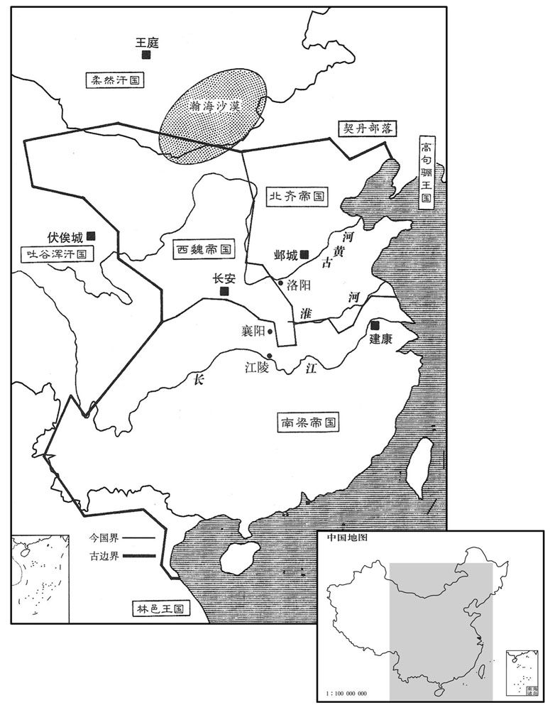
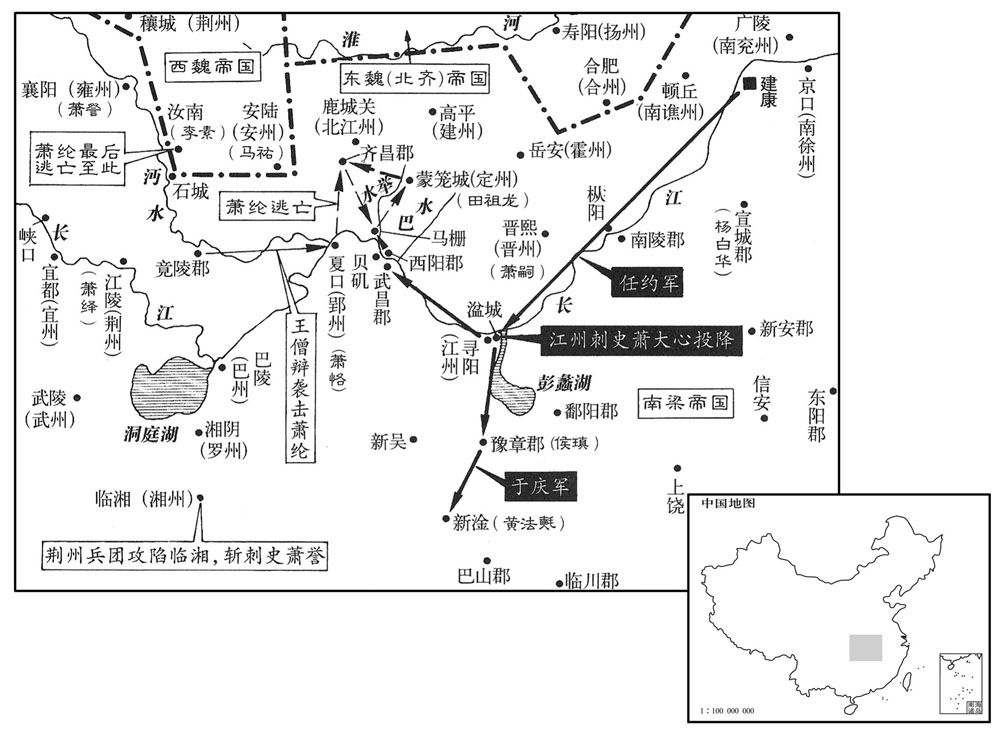
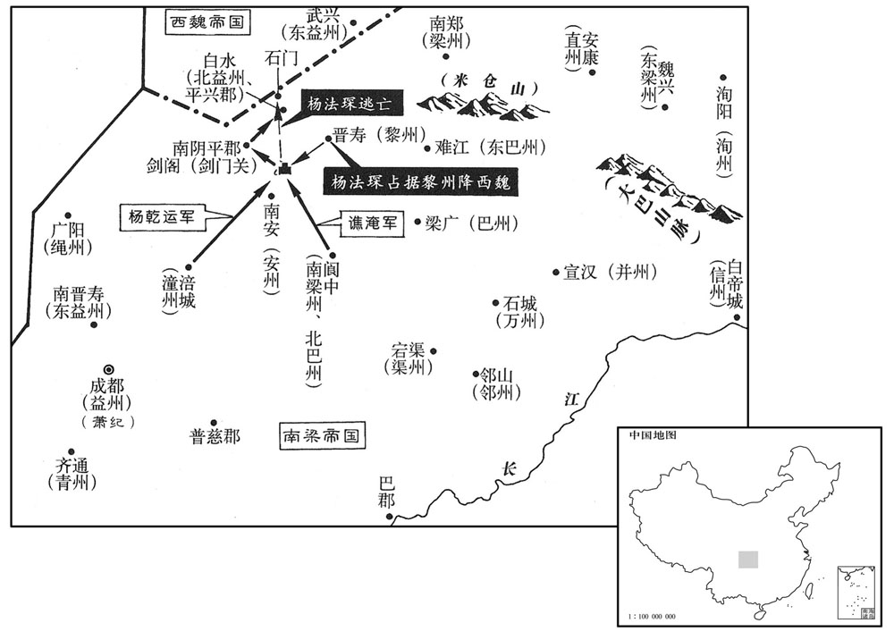

卷次与人物目录 / 卷163
资治通鉴 · 卷第一百六十三【梁纪十九】
公元550年至公元550年 · 原文、白话与胡三省注
本页按胡注本编排保存全卷内容。白话采用本站所据译本，未可靠对应的内容另列说明；事件标题用于定位，并非原书文字。
本卷共98段原文，92段有译文对应，6段缺译或待核对。
卷第一百六十三【梁纪十九】上章敦牂（庚午），一年。
卷首原文与注释
公元550年 · 梁高祖武皇帝大宝元年
大宝元年〔（庚午、五五○）〕
上传原文的注释括号有异常，字符原样保留；无法可靠划分的段落默认全文显示。
本年事件索引（现代整理）
- 梁朝大赦改元大宝
- 陈霸先击败蔡路养进军南康
- 东魏进高洋为丞相齐王
- 萧纶到江夏受推举统领诸军
- 杨忠夜袭大败柳仲礼，汉东归魏
- 来嶷与祖皓袭杀侯景部将董绍先
- 杨忠进逼江陵，梁魏议和
- 宕昌弥定被袭，宇文贵史宁平定诸羌
- 侯景派任约于庆攻梁藩王
- 萧纶请求萧绎解湘州之围
- 侯景攻克广陵，屠杀守军百姓
- 梁任萧大春为东扬州刺史
- 梁任王克为左仆射
- 东魏任高隆之为太保
- 杨白华据安吴，侯景攻之不克
- 东魏辛术围攻阳平失败
- 侯景纳溧阳公主并与梁武帝宴饮
- 东魏进高洋为齐王
- 王鳌等攻庄铁败亡
- 萧嗣击败任约驻守三章
- 萧绎任萧韶为长沙王
- 侯景请梁武帝赴西州共宴
- 江南旱蝗灾害严重，百姓相食
- 侯景残酷统治，百姓不肯归附
- 西魏封皇子儒为燕王公为吴王
- 侯景召宋子仙回京口
- 萧纶在郢州僭拟宫署并杀江仲举
- 王僧辩攻克长沙擒杀萧誉
- 萧绎为梁武帝发丧并举兵讨侯景
- 萧范屯湓城，粮尽病死
- 侯景任元思虔镇守钱塘
- 高洋谋受禅，群臣劝进
- 高德政报告邺中形势，高洋筑圜丘
- 东魏孝静帝禅位，高洋称帝
- 北齐高洋即位改元天保
- 萧宁起兵吴郡被侯子荣击杀
- 侯景之乱使三吴富庶地区残破
- 荆益二州尚完整，萧圆照受命驻白帝
- 梁任萧大连掌管扬州
- 三王由信安逃奔江陵
- 北齐封高岳等宗室与库狄干等功臣为王
- 侯瑱杀死庄铁，自据豫章
- 徐嗣徽夜袭湓城，被安南侯萧恬等击退
- 高洋立李氏为皇后、立高殷为皇太子
- 侯景任羊鸦仁为五兵尚书，羊鸦仁出奔后被杀
- 西魏册封萧詧为梁王，准其设置百官
- 陈霸先修筑崎头古城并迁居
- 冯宝先祖冯融聘娶高凉洗氏，洗氏协助治理部落
- 洗氏识破李迁仕召冯宝的反叛企图，并率军击败杜平虏
- 萧绎任陈霸先为豫州刺史，兼领豫章内史
- 裴之横攻稽亭，被徐嗣徽击退
- 北齐立元氏为文襄皇后，并封高孝琬、高孝瑜为王
- 梁王萧詧入朝西魏
- 任约击败东魏迎接萧嗣的军队，寻阳王萧大心随后降任约
- 于庆进军豫章，侯瑱投降并被送往建康
- 黄法氍聚众自保，后与周文育合兵攻于庆
- 萧纶派蒋思安袭击任约，任约反击击败蒋思安
- 萧绎改宜都为宜州，任命王琳为刺史
- 梁朝任南郡王萧大连为江州刺史
- 宇文泰因高洋称帝，率军讨伐北齐
- 萧绎命王僧辩等东下进攻萧纶，萧纶退走
- 高洋下令严惩请托使者，后因张宋轨进谏而废止
- 张老请求制定北齐律令，朝廷命薛琡等修订魏律
- 高洋选拔勇士组建百保鲜卑与边防勇士
- 北齐开始按户等征钱、按贫户征役
- 西魏军队从长安出发
- 王僧辩攻入郢州，萧纶逃往武昌后转赴齐昌
- 萧纶途中遇裴之高，收集流民与散卒屯驻齐昌
- 萧绎改封皇子大款、大成、大封为王
- 西魏军队抵达潼关
- 高洋前往晋阳，命太子高殷在凉风堂监国
- 南郡王萧大临拒绝前往依附张彪
- 任约攻占西阳、武昌，萧纶逃往齐昌
- 裴之高率部抵达夏首，受萧绎任用
- 任约擒获衡阳王萧献，并将他送往建康处死
- 侯景自封宇宙大将军、都督六合诸军事
- 梁王萧詧返回襄阳
- 黎州百姓驱逐刺史张贲，杨法琛随后据州附魏
- 高洋抵达晋阳宫，任段韶等为尚书左右仆射
- 侯景自加宇宙大将军等号
- 梁简文帝封皇子大钧等六人为王
- 北齐辛术镇守下邳，截烧侯景运粮并围攻阳平
- 萧纪率军自成都出发讨侯景，萧绎劝其留守蜀地
- 南平王萧恪等推举萧绎为相国，萧绎辞让
- 宇文泰架桥渡河进至建州，因雨撤军还蒲阪
- 徐文盛在贝矶击败任约水军，侯景派宋子仙增援
- 南康王萧会理谋杀王伟失败，被侯景处死
- 侯景派人刺杀简文帝亲信武林侯萧谘
- 侯景怀疑简文帝参与萧会理谋划，简文帝自知将死
- 侯景在宣城迫使杨白华投降
- 侯景封萧贲为竟陵王、萧子邕为随王并赐侯姓
- 高洋从晋阳返回邺城
- 萧纶在汝南筑城聚兵，准备进取安陆
- 萧纪派杨乾运、谯淹合兵讨伐杨法琛
- 侯景从晋熙返回建康
- 西魏恢复柱国大将军之职并建立府兵制度
- 北齐命宋景业制定《天保历》

本年形势与背景参考图

本年形势与背景参考图

本年形势与背景参考图
春，正月，辛亥朔，大赦，改元。
春季，正月，辛亥朔（初一），梁朝大赦天下，改年号为大宝。
陈霸先发始兴，至大庾岭，〔大庾岭，在今南安军大庾县西南二十里。吴录：南野县有大庾山，自岭峤九嶝二里，至岭下，平行十里，至平亭。〕蔡路养将二万人军于南野以拒之。〔南野县，汉属豫章郡，晋属南康郡。刘昫曰：唐韶州始兴县，汉南野县地。宋白曰：虔州之南康大庾岭，南雄州之始兴，皆汉南野县地。舆地志：今虔州龙南县，汉南野县地。将，即亮翻。〕路养妻侄兰陵萧摩诃，年十三，单骑出战，无敢当者。杜僧明马被伤，〔骑，奇寄翻。被，皮义翻。〕陈霸先救之，授以所乘马；僧明上马复战，〔上，时掌翻。复，扶又翻。〕众军因而乘之，路养大败，脱身走。霸先进军南康，〔考异曰：太清纪在二月。今从陈帝纪。〕湘东王绎承制授霸先明威将军、交州刺史。
陈霸先率军从始兴出发，抵达大庾岭。蔡路养统率两万人驻扎在南野进行抵抗。蔡路养的妻侄兰陵人萧摩诃，年方十三，单骑出战，没人敢抵挡他。杜僧明的战马受了伤，陈霸先救了他，并把自己骑的马给他；杜僧明跃上马又投入战斗，众军乘着他的气势勇猛进击，蔡路养大败，脱身逃跑了。陈霸先于是进军南康，湘东王萧绎以皇帝之令授予陈霸先明威将军、交州刺史。
戊辰，东魏进太原公高洋位丞相、都督中外诸军、录尚书事、大行台、齐郡王。
戊辰（十八日），东魏晋升太原公高洋为丞相、都督中外诸军、录尚书事、大行台、齐郡王。
庚午，邵陵王纶至江夏，郢州刺史南康王恪郊迎，〔「南康」当作「南平」，参考前后及梁书可见。夏，户雅翻。〕以州让之，纶不受；乃推纶为假黄钺，都督中外诸军事，承制置百官。〔考异曰：太清纪云：「三月，纶逼夺恪州，徙恪于郡廨。」今从梁书、典略。〕
庚午（二十日），邵陵王萧纶率人马到达江夏，郢州刺史南平王萧恪带人到郊外恭迎，并表示要把郢州让给他。萧纶不接受；于是推举萧纶为假黄钺、都督中外诸军事，以皇帝的旨意设置百官。
魏杨忠围安陆，柳仲礼驰归救之，〔去年仲礼将兵趣襄阳。〕诸将恐仲礼至则安陆难下，请急攻之，〔将，即亮翻；下同。〕忠曰：「攻守势殊，未可猝拔；若引日劳师，表里受敌，非计也。南人多习水军，不闲野战，仲礼师在近路，吾出其不意，以奇兵袭之，彼怠我奋，一举可克。克仲礼，则安陆不攻自拔，诸城不传檄定也。」乃选骑二千，衔枚夜进，败仲礼于鳆头，〔败，补迈翻。杜佑曰：鳆，音崇。水所冲曰鳆。考异曰：太清纪作「潼头」在去年十二月。今从典略。〕获仲礼及其弟子礼，尽俘其众。马岫以安陆，别将王叔以竟陵，皆降于忠。〔降，户江翻。〕于是汉东之地尽入于魏。
西魏杨忠围攻安陆，柳仲礼急忙率军驰归救援。诸将担心柳仲礼的援兵抵达后安陆就难以攻克了，都要求赶快加紧进攻。杨忠说：“攻和守所处的情势很不相同，安陆是不能一下子就攻克的；如果我军拖延时日，久攻疲劳，援兵一来，里外受敌，这可不是好办法。南方人大都习惯于水战，对陆地野战不熟悉。柳仲礼的军队就在附近，我军出其不意，以奇兵突袭，敌军懈怠，我军奋勇，一举可克。打败了柳仲礼，那么安陆就不攻自破了，诸城也就可以传檄而定。”于是精选两千骑兵，为了防止喧嚣而暴露意图，令所有的人口中衔着小木棍，乘夜偷袭，在3378头把柳仲礼打败了，促获了柳仲礼和他弟弟柳子礼，把他的军队全部俘虏了。马岫献出了安陆，别将王叔孙献出了竟陵，都投降了杨忠。从此汉东之地全部归于西魏。
广陵人来嶷，〔嶷，鱼力翻。〕说前广陵太守祖皓曰：「董绍先轻而无谋，〔轻，牵正翻。〕人情不附，袭而杀之，此壮士之任也。今欲纠帅义勇，奉戴府君。〔帅，读曰率；下同。〕若其克捷，可立桓、文之勋，必天未悔祸，犹足为梁室忠臣。」皓曰：「此仆所愿也。」乃相与纠合勇士，得百余人。癸酉，袭广陵，斩南兖州刺史董绍先；据城，驰檄远近，推前太子舍人萧籝为刺史，〔籝，弥兖翻。〕仍结果魏为援。皓，籝之子；〔祖暅见一百四十七卷武帝天监十二年，诸本作「暅之之子」者，衍一「之」字。暅，古邓翻。〕籝，勃之兄也。乙亥，景遣郭元建帅众奄至，皓婴城固守。
广陵人来嶷去游说前广陵太守祖皓说：“董绍先为人轻慢而缺乏谋略，人心不归附他，如果您发兵袭击并歼灭他，这可是壮士应有的义举呀。现在我想召集率领义勇之士，尊奉拥戴您去做这件大事。如果这件事成功了，可以建立齐桓公、晋文公那样的千古勋业；即使他气数未尽，此事未成，也足以表示您是梁室的忠臣。”祖皓说：“这正是我的心愿。”于是和来嶷一起策划纠合勇士一百余人，癸酉（二十三日），袭击广陵，杀了南兖州刺史董绍先；占据南兖州，向远近各方发布告示，推举前太子舍人萧勔为刺史，仍与东魏联合。祖皓是祖暅的儿子。萧勔是萧勃的哥哥。乙亥（二十五日），侯景派郭元建带兵攻打南兖州，祖皓环城固守。[7]二月，魏杨忠乘胜至石城，欲进逼江陵，湘东王绎遣舍人庾恪说忠曰：“詧来伐叔而魏助之，何以使天下归心！”忠遂停3379北，绎遣舍人王孝祀等送子方略为质以求和，魏人许之。绎与忠盟曰：“魏以石城为封，梁以安陆为界，请同附庸，并送质子，贸迁有无，永敦邻睦。”忠乃还。
二月，魏杨忠乘胜至石城，〔五代志：竟陵郡长寿县，后周置石城郡。〕欲进逼江陵，湘东王绎遣舍人庾恪说忠曰：「詧来伐叔〔说，式芮翻。来伐事见上卷上年。〕而魏助之，何以使天下归心！」忠遂停湕北。〔湕水之北也。湕，纪偃翻。〕绎遣舍人王孝祀等送子方略为质以求和，魏人许之。绎与忠盟曰：「魏以石城为封，梁以安陆为界，请同附庸，并送质子，贸迁有无，〔质，音致。贸，易也；迁，徙也；徙有之无以相贸易。贸，音茂。〕永敦邻睦。」忠乃还。〔还，从宣翻，又如字。〕
本段缺少可靠对应白话，原文完整保留；未使用生成译文。
宕昌王梁弥定〔宕，徒浪翻。〕为其宗人獠甘所袭，弥定奔魏，獠甘自立。羌酋傍乞铁喹据渠株川，〔獠，鲁皓翻。酋，慈秋翻。〕与渭州民郑五丑合诸羌以叛魏。丞相泰使大将军宇文贵、凉州刺史史宁讨之，擒斩铁喹、五丑。宁别击獠甘，破之，獠甘将百骑奔生羌巩廉玉。〔生羌，远在塞外，不羁属于魏者。骑，奇寄翻。〕宁复纳弥定于宕昌，置岷州于渠株川，〔五代志，临洮郡临洮县，西魏置溢乐县，并置岷州。复，扶又翻。〕进击巩廉玉，斩獠甘，虏廉玉送长安。
宕昌王梁弥定被他宗族里的人獠甘所袭击，梁弥定奔逃到西魏，獠甘自立为王。羌族酋长傍乞铁匆盘据渠株川，与谓州人郑五醜纠合诸羌起兵背叛西魏。丞相宇文泰派大将军宇文贵、凉州刺史史宁发兵征讨，擒斩傍乞铁匆和郑五醜。史宁又移兵攻打獠甘，打败了他，獠甘带领百名骑兵投奔远在塞外而不辖属于西魏的羌族首领巩廉玉。史宁重新迎立梁弥定为宕昌王，在渠株川设置岷州，派兵进击巩廉玉，斩獠甘，俘虏了巩廉玉，把他送往长安。
侯景遣任约、于庆等帅众二万攻诸藩。〔诸藩，谓梁之宗室分任藩维者。任，音壬。帅，读曰率。〕
侯景派任约、于庆等带兵两万攻打梁室诸蕃王。
邵陵王纶欲救河东王誉而兵粮不足，乃致书于湘东王绎曰：「天时、地利，不及人和，〔用孟子之言。〕况于手足肱支，岂可相害！今社稷危耻，创巨痛深，〔礼记三年问曰：创巨者其疾久，痛甚者其愈迟。三年者，称情而立文，所以为至痛极也。斩衰、苴杖、居倚庐、食粥、寝苫、枕块，所以为至痛饰也。创，初良翻。〕唯应剖心尝胆，泣血枕戈，〔越王句践卧薪尝胆，求以报吴。晋刘琨枕戈待旦，志枭逆虏。枕，之任翻。子执亲丧，泣血三年。孔颖达曰：说文：哭，哀声也。泣，无声出泪也。则无声谓之泣矣。连言血者，以泪出于目，犹血出于体，故以泪比血。礼记曰：子羔执亲之丧，泣血三年。注曰：无声而血出，是也。〕其余小忿，或宜容贳。〔贳，贷也。〕若外难未除，家祸仍构，料今访古，〔难，乃旦翻。料，音聊。〕未或不亡。夫征战之理，唯求克胜；至于骨肉之战，愈胜愈酷，捷则非功，败则有丧，〔丧，息浪翻。〕劳兵损义，亏失多矣。侯景之军所以未窥江外者，〔荆州治江陵，在江北，故曰江外。〕良为藩屏盘固，宗镇强密。〔为，于伪翻。屏，必郢翻。〕弟若陷洞庭，〔湘州之地，襟带洞庭，故谓湘州为洞庭。〕不戢兵刃，雍州疑迫，何以自安，必引进魏军以求形援。〔以纶之昏狂，犹能言及于此，盖势有所必至也。戢，阻立翻。雍，于用翻。〕弟若不安，家国去矣。必希解湘州之围，存社稷之计。」绎复书，陈誉过恶不赦，〔言其过大恶极，法所不赦。〕且曰：「詧引杨忠来相侵逼，颇遵谈笑，用却秦军，〔鲁仲连谈笑而却秦军，绎引此以为大言。〕曲直有在，不复自陈。〔复，扶又翻。〕临湘旦平，〔临湘县自汉以来属长沙郡，时为州郡治所。隋改临湘县曰长沙县。〕暮便即路。」〔即路，就路也。承上文而言，若欲攻襄阳；考之下文，盖谓讨侯景。〕纶得书，投之于案，慷慨流涕曰：「天下之事，一至于斯，湘州若败，吾亡无日矣！」〔纶知绎兵东下，必将图己，故云然。使在京口之时能思及此，则何亡国丧身之有！古人所以重居安虑危，居宠思畏者也。史为纶北奔张本。〕
邵陵王萧纶想救援河东王萧誉，但兵粮不足，于是写信给湘东王萧绎说：“天时、地利也比不上人和，何况弟兄犹如手足股肱，岂可相互损害！现在国家处于危难，蒙受耻辱，创伤巨大，痛苦殊深，我辈只有剖心尝胆，泣血枕戈，发奋救危雪耻，其余的小怨恨，应该能互相谅解才是。如果外难未除，仍然在家族中构祸不止，观今鉴古，没有不灭亡的道理。战争的道理是不顾一切，只求能胜；至于骨肉相残的战争，则愈是获胜愈加残酷，大捷 也不是什么功劳，战败则必然有所损失。动用武力，损害人伦道 义，亏失实在是太多了。侯景的军队之所以未敢进 犯长江以北，实在是因为我们梁朝诸藩互为屏护，象磐石一样牢固，宗室的镇 守强大而严密。您如果攻陷洞庭而不约束兵刃，雍州方面必然怀疑您 将要进逼，无以自安，势必引进西魏的军队以为援手。这样必将给您造成威胁。您如果感到不安定，那么梁朝的天下就完了。请您一定解除湘州之围，以保存国家社稷。”萧绎复信，逐条陈述萧誉过大恶极，法所不赦，并且说：“萧詧如果勾引杨忠来相侵逼的话，那我将象鲁仲连谈笑而却秦军一样轻而易举地打败他们。是非曲直明摆着，我就不再自陈了。临湘早上被攻下，晚上我就上路。”萧纶收到信，看后扔到案几上，慷慨流涕地说：“天下之事，竟然糟到这个地步！湘州如果陷落，我就快灭亡了！”
侯景遣侯子鉴帅舟师八千，自帅徒兵一万，〔徒兵，步兵也。帅，读曰率；下同。〕攻广陵，三日，克之，执祖皓，缚而射之，箭徧体，然后车裂以徇；城中无少长皆埋之于地，驰马射而杀之。〔射，而亦翻。少，诗照翻。长，知两翻。考异曰：太清纪曰：「城中数百人，」典略曰：「死者八千人，」今从南史。〕以子鉴为南兖州刺史，镇广陵。〔广陵之人既歼矣，子鉴所镇者空城耳。〕景还建康。
侯景派侯子鉴率领水军八千人，自率步兵一万人，攻打广陵。打了 三天，城破，抓住了祖皓，把他缚住用箭射他，箭镞丛集遍体，然后再把他车裂示众。城中民众不分老少都被埋在地里，让士兵来回纵马奔驰，射而杀之。侯景任命侯子鉴当南兖州刺史，镇守广陵，他自己回建康。 [12]丙戌，以安陆王大春为东扬州刺史。省吴州。
丙戌，以安陆王大春为东扬州刺史。省吴州。〔景置吴州见上卷上年。〕
本段缺少可靠对应白话，原文完整保留；未使用生成译文。
乙巳，以尚书仆射王克为左仆射。
乙巳（二十五日），侯景任命尚书仆射王克为左仆射。
庚寅，东魏以尚书令高隆之为太保。
庚寅（疑误），东魏任命尚书令高隆之为太保。
宣城内史杨白华进据安吴，〔孙吴立安吴县，属宣城郡；隋省安吴入泾县。〕侯景遣于子悦帅众攻之，不克。
宣城内史杨白华进据安吴。侯景派遣于子悦率众攻打安吴，没打下。
东魏行台辛术将兵入寇，围阳平，不克。
东魏行台辛术带兵入境进犯，围困阳平，没打下。
侯景纳上女溧阳公主，甚爱之。〔溧，音栗。〕三月，甲申，景请上禊宴于乐游苑，〔禊宴，因祓禊而开宴。禊，胡计翻。乐游苑，在玄武湖南。〕帐饮三日。上还宫，景与公主共据御床，南面并坐，群臣文武列坐侍宴。
侯景娶简文帝的女儿溧阳公主，非常喜爱她。三月，甲申（疑误）， 侯景请皇上修褉宴集于乐游苑，在帐幕里宴饮三天。简文帝还宫后，侯景与溧阳公主一起占据御床，南面并坐，让群臣文武列坐侍宴。
庚申，东魏进丞相洋爵为齐王。
庚申（十一日），东魏晋升丞相高洋为齐王。
临川内史始兴王鳇等击庄铁，〔王鳇，始兴人；鳇即「毅」字，后人传写，变「立」为「鳊」耳。〕鄱阳王范遣其将巴西侯瑱救之，〔瑱，他甸翻。〕鳇等败死。
临川内史始兴 人王毅等进攻庄铁。鄱阳王萧范派他的部将巴西人侯瑱去救 援，王毅等兵败身死。
鄱阳世子嗣与任约战于三章，约败走；嗣因徙镇三章，谓之安乐栅。〔去年鄱阳王范西上，使世子嗣守安乐栅，今移栅三章，亦以安乐名栅。乐，音洛。〕
鄱阳世子萧嗣与任约在三章开战，任约败走；萧嗣乘势迁移，镇守三章，称之为“安乐栅”。
夏，四月，庚辰朔，湘东王绎以上甲侯韶为长沙王。〔上甲侯韶奔江陵，见上卷上年。按梁书，长沙王懿子渊业嗣封；卒，子孝俨嗣封；又卒，子噔嗣封。噔，懿曾孙也，时在建康。湘东以韶归之，遂以为长沙王，非礼也。〕
夏季，四月，庚辰朔（初一），湘东王萧绎任命上甲侯萧韶为长沙王。
丙午，侯景请上幸西州，上御素辇，侍卫四百余人，景浴铁数千，翼卫左右。〔浴铁者，言铁甲坚滑，若以水浴之也。〕上闻丝竹，凄然泣下，命景起舞；景亦请上起舞。酒阑坐散，〔坐，徂卧翻。〕上抱景于床曰：「我念丞相。」景曰：「陛下如不念臣，臣何得至此！」逮夜乃罢。
丙午（二十七日），侯景请简文帝巡视西州，简文帝乘坐不加雕漆的素辇，带四百多名侍卫人员。而侯景则率几千名铁甲铮亮的武士，翼卫在左右。简文帝听到丝竹之声，凄然流泪，传命侯景起舞；侯景也请简文帝起舞。酒阑人散，简文帝在床上抱着侯景说：“我心里念着丞相。”侯景回答说：“陛下如不念顾我，我哪能得到现在的地位！”直到夜色降临才分手。
时江南连年旱蝗，江、扬尤甚，百姓流亡，相与入山谷、江湖，采草根、木叶，菱芡而食之，〔菱，芰也。芡，巨险翻；说文曰：鸡头也。方言曰：南楚谓之鸡头，北燕谓之蕧，青、徐、淮、泗之间谓之芡。〕所在皆尽，死者蔽野。富室无食，皆鸟面鹄形，衣罗绮，怀珠玉，俯伏床帷，待命听终。千里绝疴，〔衣，于既翻。疴，与烟同。〕人迹罕见，白骨成聚，如丘陇焉。
这时江南连年闹旱灾、蝗灾，江州、扬州尤其严重，老百姓流离失所，成群结队逃入山谷之中，江湖之滨，采集草根、树叶、菱角、鸡头为食物。饥民所至，这些东西一扫而空，饿死的人横陈田野，比比皆是，富裕人家也没有吃的，一个个饿得鸟面鹄形，穿着罗绮衣裳，怀里藏着珍珠美玉，俯伏在床帷之间，等待死亡。千里之内，炊烟断绝，人迹罕见，白骨成堆，象丘陇一样。
景性残酷，于石头立大确，〔确，都内翻。〕有犯法者捣杀之。常戒诸将曰：「破栅平城，当净杀之，使天下知吾威名。」故诸将每战胜，专以焚掠为事，斩刈人如草芥，以资戏笑。由是百姓虽死，终不附之。〔史言侯景将败。〕又禁人偶语，犯者刑及外族。〔男子谓舅家为外家，妇人谓父母之家为外家。外族，外家之族。〕为其将帅者，悉称行台，来降附者，悉称开府，其亲寄隆重者曰左右厢公，勇力兼人者曰库直都督。〔南史侯景传作「库真部督」。误也。〕
侯景生性残酷，他在石头城设立大碓，犯法的人被抓住，就用大碓捣杀。平常总是告诫诸将说：“一旦攻破栅栏，踏平城市，就杀它个干干净净，使天下人知道我的厉害！”所以他手下的诸将每次战胜，就专门以烧杀抢掠为能事，杀人如刈草芥，以此作为游戏取乐。因此老百姓即使死，也绝不归附他。侯景又禁止人民在一起交头接耳，有违犯的刑罚株连到他的外族。当他的将帅的，都称为行台；来投降归附他的，都称为开府。他所特别亲信看重的称为左右厢公，勇气力量超人的称为库直都督。 [23]魏封皇子儒为燕王，公为吴王。
魏封皇子儒为燕王，公为吴王。
本段缺少可靠对应白话，原文完整保留；未使用生成译文。
侯景召宋子仙还京口。〔去年宋子仙克东扬州，今召还京口。〕
侯景召宋子仙回京口。
邵陵王纶在郢州，以听事为正阳殿，内外齐合，悉加题署。其部下陵暴军府，郢州佐莫不怨之。咨议参军江仲举，南平王恪之谋主也，说恪图纶，〔说，式芮翻。〕恪惊曰：「若我杀邵陵，宁静一镇，荆、益兄弟必皆内喜，〔帝既蒙尘，纶于兄弟之次当立。恪若除纶，则人望归于荆、益，必当内以为喜。时湘东王绎在荆州，武陵王纪在益州。〕海内苦平，则以大义责我矣。且巨逆未枭，〔巨逆，谓侯景。枭，谓枭其首。枭，坚尧翻。〕骨肉相残，自亡之道也。卿且息之。」仲举不从，部分诸将，〔分，扶问翻。〕刻日将发，谋泄，纶压杀之。恪狼狈往谢，纶曰：「群小所作，非由兄也。凶党已毙，兄勿深忧！」〔南平王恪，伟之子也，于纶为兄。〕
邵陵王萧纶在郢州，把厅堂称为正阳殿，内外斋门门，都题上匾名。他的部下在军府里作威作福，郢州将士官佐没有不怨恨的，谘议参军江仲举，是南平王萧恪的主要谋士，他鼓励萧恪反对萧纶，取而代之。萧 恪大惊，说：“如果我杀了邵陵王，郢州也许可以宁静，但荆州、益州的宗室兄弟必然内心窃喜。海内如果平定，他们就会以君臣大义责备我。而且最大的逆贼没有杀掉，就骨肉相残，这是自取灭亡之道。你的想法不妥，还是算了吧。”但江仲举不听，他安排部署手下的将领们，定好日子就要举事，但是事情泄漏，萧纶把他们统统压死。萧恪非常狼狈不安地前往谢罪，萧纶说：“这都是一群小人所干的，不是由您策划的。凶党已经消灭，您不必深忧！”
王僧辩急攻长沙，辛巳，克之。执河东王誉，斩之，传首江陵，湘东王绎反其首而葬之。〔反其首于长沙，与身俱葬。〕初，世子方等之死，〔见上卷上年。〕临蒸周铁虎功最多，〔吴立临蒸县，以县临蒸水而名，属衡阳郡，晋属湘东郡。郦道元曰：临蒸即故酃县，县即湘东郡。刘昫曰：隋改临蒸为衡阳县，今衡州所治衡阳县是也。衡州志：吴分酃县立临蒸县，俯临蒸水，其气如蒸。姚思廉陈书曰：周铁虎，不知何许人，梁世南渡，事河东王誉，为临蒸令。如此，则通鉴逸「令」字。〕誉委遇甚重。僧辩得铁虎，令烹之，呼曰：〔呼，火故翻。〕「侯景未灭，柰何杀壮士！」僧辩奇其言而释之，还其麾下。绎以僧辩为左卫将军，加侍中、镇西长史。
王僧辩猛烈地进攻长沙，辛巳（初二），攻破城池，抓住了河东王萧誉，杀了他，并把首级送到江陵。湘东王萧绎让人把首级送回长沙，和身子合在一起安葬。当初，世子方等被杀死，临蒸人周铁虎功劳最大，萧誉对他委任恩遇很重。王僧辩抓获周铁虎，命令手下烹杀他。周铁虎大叫 ：“侯景未灭，为什么杀壮士？”王僧辩觉得他吐言奇伟，就释放了他，让他回到军帐下。萧绎任命王僧辩为左卫将军，加侍中、镇西长史。
绎自去岁闻高祖之丧，以长沙未下，故匿之。壬寅，始发丧，刻檀为高祖像，置于百福殿，事之甚谨，动静必咨焉。绎以为天子制于贼臣，不肯从大宝之号，犹称太清四年。丙午，绎下令大举讨侯景，移檄远近。
萧绎自去年就听到了梁武帝驾崩的消息，因为当时长沙还没打下，所以加 以封锁。壬寅（二十三日），才发丧，用檀木雕刻梁武帝像，安放在百福殿里，朝拜很恭谨，一举一动都前往咨求。萧绎认为天子被贼臣挟制，所以不肯采用大宝的年号，还是照旧年号称太清四年。丙午（二十七日），萧绎下令大举讨伐侯景，檄文传遍远近。
鄱阳王范至湓城，以晋熙为晋州，〔晋安帝分庐江郡立晋熙郡。五代志：同安郡怀宁县旧置晋熙郡。唐以同安郡为舒州。〕遣其世子嗣为刺史，江州郡县多辄改易。〔改易郡县守令也。〕寻阳王大心，政令所行，不出一郡。〔惟寻一郡而已。〕大心遣兵击庄铁，嗣与铁素善，请发兵救之，范遣侯瑱帅精甲五千助铁。〔瑱，他甸翻，又音镇。帅，读曰率；下同。〕由是二铁互相猜忌，无复讨贼之志。〔复，扶又翻。〕大心使徐嗣徽帅众二千，筑垒稽亭以备范，〔据齐书晋安王子懋传：子懋谋举兵于江州，宣城王遣裴叔业袭取湓城，子懋先已具船于稽亭渚，闻叔业得湓城，乃据州自卫。则稽亭渚在江州城东也。帅，读曰率。〕市籴不通，范数万之众，无所得食，多饿死。范愤恚，疽发于背，五月，乙卯，卒。〔恚，于避翻。考异曰：典略作「己酉」。今从太清纪。〕范众秘不发丧，奉范弟安南恬为主，有众数千人。
鄱阳王萧范率众进抵湓城，把晋熙郡改为晋州，派他的长子萧嗣为晋州刺史，江州所属郡县守令大部分都改换了。寻阳王萧大心，政令所行，不出寻阳一郡之外。萧大心派兵进击庄铁，萧嗣与庄铁一向关系很好，就请求萧范发兵救援他。萧范派侯瑱率领精锐甲兵五千人去帮助庄铁。从此鄱阳、寻阳二镇 互相猜忌，再也没有讨贼的心思了。萧大心让徐嗣徽率众二千，在 稽亭筑垒以防备萧范，这一来切断了鄱阳的粮食流通，萧范数万军队，没地方找到粮食，大多饿死。萧范愤恨大怒，背上痈疽破裂，五月，乙卯（初七），去世。萧范的部下秘不发丧，推举萧范的弟弟安南侯萧恬为主帅，有部众数千人。
丙辰，侯景以先思虔为东道大行台，镇钱唐。丁巳，以侯子鉴为南兖州刺史。
丙辰（初八），侯景任命元思虔为东道大行台，镇守钱唐。丁巳（初崐九），任命侯子鉴为南兖州刺史。
东魏齐王洋之为开府也，〔洋为开府，见一百五十七卷武帝大同元年。〕勃海高德政为管记，〔管记，即记室参军之职。〕由是亲昵，言无不尽。〔昵，尼质翻。〕金紫光禄大夫丹杨徐之子、北平太守广宗宋景业，〔汉、晋以来，中山有北平县，后魏孝昌中，分置北平郡，属定州。广宗县，汉属巨鹿郡，后属安平国，后魏太和二十一年，分置广宗郡；时属司州。〕皆善图谶，〔谶，楚谮翻。〕以为太岁在午，当有革命，因德政以白洋，劝之受禅。洋以告娄太妃，太妃曰：「汝父如龙，兄如虎，犹以天位不可妄据，终身北面，汝独何人，欲行舜、禹之事乎！」洋以告之才，之才曰：「正为不及父兄，〔为，于伪翻。〕故宜早升尊位耳。」洋铸像卜之而成，乃使开府仪同三司段韶问肆州刺史斛律金，金来见洋，固言不可，以宋景业首陈符命，请杀之。洋与诸贵议于太妃前，太妃曰：「吾儿懦直，必无此心，高德政乐祸，教之耳。」〔乐，音洛。〕洋以人心不壹，遣高德政如邺察公卿之意，未还；洋拥兵而东，至平都城，〔九域志：辽州辽山县有平城镇。宋白曰：辽州平城县本汉湟县地，晋置武乡县，此地属焉。隋开皇十六年，于赵简子所立平都故城置平城县。〕召诸勋贵议之，莫敢对。长史杜弼曰：「关西，国之勍敌，〔谓宇文氏也。勍，渠京翻。〕若受魏禅，恐彼挟天子，自称义兵而东向，〔此天子，谓西魏主。〕王何以待之！」徐之才曰：「今与王争天下者，彼亦欲为王所为，纵其屈强，〔屈，其勿翻。强，其两翻。〕不过随我称帝耳。」弼无以应。高德政至邺，讽公卿，莫有应者。司马子如逆洋于辽阳，〔辽阳县自汉末以来属乐平郡，隋开皇十一年，改曰辽山县，我朝为辽州治所。〕固言未可。洋欲还，仓丞李集曰：〔北齐之制，太仓及水次诸仓皆有令、丞。北齐纪作「尚书丞李集」。〕「王来为何事，而今欲还﹖」〔为，于伪翻。〕洋伪使于东门杀之，而别令赐绡十匹，遂还晋阳。自是居常不悦。徐之才、宋景业等日陈阴阳杂占，云宜早受命。高德政亦敦劝不已。洋使术士李密卜之，还大横，曰：「汉文之卦也。」〔大横见十三卷汉高后八年。〕又使宋景业筮之，遇干之鼎，〔干之初九、九五二爻，动变而之鼎。〕曰：「干，君也。鼎，五月卦也。宜以仲夏受禅。或曰：「五月不可入官，犯之，终于其位。」〔阴阳家之说，上官忌正月、五月、九月。〕景业曰：「王为天子，无复下期，〔复，扶又翻。〕岂得不终于其位乎！」洋大刨，乃发晋阳。
东魏齐王高洋在设置官署的时候，任命勃海人高德政为管记，因此两 人关系很亲密，什么话都可以交谈。金紫光禄大夫丹杨人徐之才、北平太守广宗人宋景业，都精通图谶占验之术。他们看到太岁星在午，认为这意味着帝室不祥，会有改朝换代的事发生，就把这种预言通过高德政告诉高洋，劝他接受禅让。高洋把这事禀告娄太妃，太妃说：“你父亲和哥哥都是如龙似虎一样的英才，尚且认为皇位天授，不能妄图窃据，终其一生，北面事君，你是何等样人，想效法舜、禹禅让的事吗？”高洋把娄太妃的话告诉徐之才，徐之才说：“正因为您的才能都比不上父兄，所以才应该早日升上尊位呀！”高洋通过铸铜像进行占卜，于是让开府仪同三司段韶去征求肆州刺史斛律金的意见，斛律金听了后来求见高洋，坚决地认为这件事干不得，并以宋景业带头宣讲符命惑主为由，要求高洋杀了他。高洋和各位贵戚一起在娄太妃面前商议这件事，娄太妃说：“我儿子懦弱直爽，肯定不会有这种念头，高德政喜欢弄出祸端，唯恐天下不乱，这都是他教唆的呀！”高洋因为人心不能一致，就派高德政去邺州观察公卿大臣们的意向，去了后还没返回，高洋就率军队向东进发，抵达平都城，召集诸位元勋重臣一起商议，但没有人敢吱声。长史杜弼说：“关西宇文氏，是我国的强敌，如果您接受魏的禅让，恐怕宇文氏会挟持天子，自称为勤王义兵而向东讨伐，大王拿什么来对付他们呢？”徐之才说：“现在和大王 争天下的人，他也是想做大王所做的 事的，即使他倔强不顺从，不过也随着大王的样子自己称帝罢了。”杜弼听了，无言以对。高德政抵达邺州，把高洋准备接受禅让的事暗示给公卿大臣，但没有响应的。司马子如到辽阳去迎接高洋，坚决地认为这事行不得。高洋想返回晋阳，仓丞李集说：“大王来这一趟是干什么的，难道您忘了，现在就想回去？”高洋假装把他在东门杀了，同时另外发令，赏赐他十匹绡，于是返回到晋阳。从此高洋日常起居总是郁郁不乐。徐之才、宋景业等每天在他耳边讲陈阴阳之理、占验之事，嘀嘀咕咕说应该早点接受禅让，应承天命。高德政也使劲劝说个没完。高洋让术士李密占卜这件事，结果得到大横卦。李密说：“这可是汉孝文帝得到过的吉卦呀。”高洋又让宋景业用筮草占卜，结果占到乾卦，乾卦又变化为鼎卦。宋景业说：“乾卦，意味着君主之象。鼎卦，是说在五月发生变化。您在仲夏受禅让最适宜了。”有人进言说：“按阴阳家的说法，五月不能入居官位，如果违犯这一条，就会死在官位上。”宋景业说：“大王贵为天子，当然没有下台离位的时候，哪能不死在自己的皇位上呢！”高洋听了非常高兴，于是又从晋阳向东进发了。
高德政录在邺在诸事，条进于洋，洋令左右陈山提驰驿赍事条，并密书与杨愔。〔愔，于今翻。〕是月，山提至邺，杨愔即召太常卿邢邵议造仪注，秘书监魏收草九锡、禅让、劝进诸文；〔凡禅代皆奉表三让，百僚三表劝进而后即位，故令收预草诸文。〕引魏宗室诸王入北宫，留于东斋。甲寅，东魏进洋位相国，总百揆，备九锡。洋行至前亭，〔前亭，在晋阳之东，平都城之西。〕所乘马忽倒，意甚恶之，至平都城，不复肯进。〔恶，乌路翻。复，扶又翻。〕高德政、徐之才苦请曰：「山提先去，恐其漏泄。」即命司马子如、杜弼驰驿续入，观察物情。子如等至邺，众人以事势已决，无敢异言。洋至邺，召夫〔夫，民夫也。〕赍筑具集城南。高隆之请曰：「用此何为﹖」洋作色曰：「我自有事，君何问为！欲族灭邪！」隆之谢而退。于是作圜丘，备法物。
高德政把在邺州察访到的情况、动向逐条记录下来，呈送给高洋。高洋命令身边的侍从陈山提沿驿路驰马急行，带着高德政进呈的事条和一封密信去给杨愔。就在这个月，陈山提抵达邺州，杨愔就召集太常卿邢邵负责商议制定礼仪制度，秘书监魏收起草加九锡、禅让、劝进等文告，并召集东魏宗室诸王进入北宫，留宿东斋。甲寅（初六），东魏拥戴高洋位居相国，总领百官，加九锡。高洋行进到前亭时，他所乘骑的马忽然倒下。高洋很厌恶这件事，抵达平都城后，就不肯再前进了。高德政、徐之才苦苦请求说：“陈山提已经先去邺城了，我们若不前进，时间拖长了，怕他会泄漏消息。”高洋听了，就命令司马子如、杜弼沿驿道跟着奔驰入邺，以观察事态发展，人心动向。司马子如 等人抵达邺城以后，众人以为大势已定，没有敢表示异议的。高洋抵达邺城，召集民夫带着建筑工具集中在城南。高隆之问道：“召集民夫干什么？”高洋勃然作色，说：“我自然有事，你问这干什么？难道想自取灭族吗？”高隆之连声谢罪，唯唯而退。于是众民夫开始修筑祭天用的圆形高坛，准备登基大典用的法器物事。
丙辰，司空潘乐、侍中张亮、黄门郎赵彦深等求入启事，东魏孝静帝在昭阳殿见之。亮曰：「五行递运，有始有终，〔谓五德之运，以木代水，以火代木，以土代火，以金代土，以水代金也。〕齐王圣德钦明，万方归仰，愿陛下远法尧、舜。」帝敛容曰：「此事推挹已久，〔推，吐雷翻。挹，逊也。〕谨当逊避。」又曰：「若尔，须作制书。」中书郎崔劼、裴让之曰：〔劼，丘八翻。〕「制已作讫。」使侍中杨愔进之。东魏主既署，曰：「居朕何所﹖」愔对曰：「北城别有馆宇。」乃下御坐，步就东郎，〔坐，徂卧翻。〕咏范蔚宗后汉书赞曰：「献生不辰，身播国屯，终我四百，永作虞宾。」〔范晔，字蔚宗，作后汉书。此其赞献帝之辞也。贤注曰：辰，时也。播，迁也。言献帝生不逢时，身既播迁，国又屯难也。汉有天下四百年而运终。虞宾，谓虞以尧子丹朱为宾。书曰：虞宾在位。蔚，纡勿翻。屯，陟伦翻。〕所司请发，〔所司，谓掌禅代事者；请发者，请出宫居别邸也。此实杨愔等使人请之。〕帝曰：「古人念遗簪弊履，朕欲与六宫别，可乎﹖」高隆之曰：「今日天下犹陛下之天下，况在六宫。」帝步入，与妃嫔已下别，举宫皆哭。赵国李嫔诵陈思王诗云：「王其爱玉体，俱享黄发期。」〔曹植，魏武帝之子，封陈王，谥曰思。嫔，毗宾翻。〕直长赵道德以〔【章：十二行本「以」下有「故犊」二字；乙十一行本同；孔本同；张校同。】〕车一乘侯于东合，〔直长，官名。凡殿中诸局各有奉御，有直长。赵道德盖尚乘直长也，亦高氏之私人。东合，即东合门。长，竹两翻。乘，绳证翻。〕帝登车，道德超上抱之，〔上，时掌翻。〕帝叱之曰：「朕自畏天顺人，何物奴敢逼人如此！」道德犹不下。出云龙门，王公百僚拜辞，高隆之洒泣。遂入北城，居司马子南宅，〔司马子如有宅在太原，故谓邺城之宅为南宅。〕遣太尉彭城王韶等奉玺绶，禅位于齐。〔玺，斯氏翻。绶，音受。东魏十六年而亡。考异曰：北齐书、北史高德政传云：「五月六日，留咸阳王坦等。七日，司马子如等至邺。九日，文宣至城南顿。」按后魏书、北史帝纪皆云，「辛亥，王如邺；甲寅，加九锡；丙辰，魏主逊位；戊午，王即帝位。」典略：「辛亥，王还邺。」以长历推之，此月己酉朔，皆不与德政传日相应。盖辛亥始自晋阳如邺，非到邺之日也。〕
丙辰（初八），司空潘乐、侍中张亮、黄门郎赵彦深等要求入宫奏事，东魏孝静帝在昭阳殿召见他们。张亮说：“金木水火土五行互相递代地运行，帝命有始有终，这是天意。齐王高洋天资圣明，道德崇高，天下归心，万众钦仰，希望陛下效法尧、舜，把帝位禅让给齐王。”孝静帝神色凝重地说：“这件事推让很久了，我谨遵众意，理当逊位让贤。”又说：“如果是这样，必须写成正式诏书。”中书郎崔劼、裴让之说：“诏书已经准备好了。”便让侍中杨愔把让位的诏书进呈孝静帝。孝静帝签署之后，说：“退位之后，让我住到哪去？”杨愔回答说：“北城另外有一套楼馆房舍。”于是孝静帝走下御座，步行走向东廊，口里吟咏着范晔所作的《后汉书》中对汉献帝的一段赞辞：“献帝生不逢辰，身既播迁，国又遭难，到我为止，汉祚四百年终结了，让我永远充当 虞的宾客尧子丹朱的角色吧！”掌管禅位事宜的人要孝 静帝马上出发到为他准备的别馆去，孝静帝说：“古人有顾念遗簪敝履的遗风，我想效法，和六宫的妃嫔们告别一下，可以吗？”高隆之说：“今天天下还是陛下的，何况六宫呢？”孝静帝步行进宫，与妃嫔及其下属告别，整个皇宫都痛哭失声。赵国人李嫔诵读陈思王曹植的诗：“王其爱玉体，俱享黄发期。”直长赵道德准备好一乘牛车于东阁门，孝静帝登车，赵道德赶上车去抱住他，孝静帝喝斥他说：“我自己畏天命，顺人心，让出帝位，你是什么东西，敢这样肆无忌惮地逼我！”赵道德仍然不下车。孝静帝出云龙门，王公大臣们向他拜辞，高隆之流泪哭泣。就这样孝静帝进入了北城，住在司马子如的南宅。派太尉彭城王元韶等人捧着玉玺印绶，把皇位禅让给齐王。
戊午，齐王即皇帝位于南郊，大赦，改元天保。自魏敬宗以来，百官绝禄，至是始复给之。已未，封东魏主为中山王，待以不臣之礼。追尊齐献武王为献武皇帝，庙号太祖，后改为高祖；齐襄王为文襄皇帝，庙号世宗。辛酉，尊王太后娄氏为皇太后。乙丑，降魏朝封爵有差，其宣力霸朝及西、南投化者，不在降限。 戊午（初十），齐王高洋在邺城南郊即皇帝位，宣布大赦天下，改年号为天保。自魏孝庄帝以来，朝廷百官都断了俸禄，到这时候才又给了。己未（十一日），北齐封孝静帝为中山王，让他可以不用臣下之礼。同时追尊齐献武王为献武皇帝，庙号太祖，后来又改称为高祖；追尊文襄王为文襄皇帝，庙号世宗。辛酉（十三日），尊王太后娄氏为皇太后。乙丑（十七日），北齐把原来魏朝给大臣们的封爵按不同情况降了级，但其中随高欢起兵以来有过功勋的大臣以及关西和江南来投降归附的臣子不在降级之列。
戊午，齐王即皇帝位于南郊，〔帝讳洋，字子进，勃海王高欢第二子，澄之母弟也。欢以勃海王赠齐王，洋又进爵齐王；且高氏本勃海人，勃海故齐地也，国遂号曰齐。〕大赦，改元天保。自魏敬宗以来，百官绝禄，至是始复给之。〔复，扶又翻。〕己未，封东魏主为中山王，待以不臣之礼。追尊齐献武王为献武皇帝，庙号太祖，后改为高祖；文襄王为文襄皇帝，庙号世宗。辛酉，尊王太后娄氏为皇太后。乙丑，降魏朝封爵有差，其宣力霸朝〔自高欢起兵以来诸勋贵，皆宣力霸朝者也。朝，直遥翻。〕及西南投化者，不在降限。〔谓自关西及江南来投者。〕
本段缺少可靠对应白话，原文完整保留；未使用生成译文。
文成侯宁起兵于吴，有众万人，己巳，进攻吴郡；〔吴郡带吴县。宁盖起兵于吴县界，进攻吴郡城也。按侯景传：宁起兵于吴西乡。去年陆缉推宁据吴郡，宋子仙击之败走，今复起兵于西乡。〕行吴郡事侯子荣逆击，杀之。宁，范之弟也。子荣因纵兵大景郡境。
文成侯萧宁在吴县起兵，拥有士兵一万余人，己巳（二十一日），进攻吴郡，代理吴郡政事的侯子荣出兵迎击，杀了萧宁。萧宁是萧范的弟弟。侯子荣因此纵容士兵在吴郡境内大肆抢掠。
自晋氏渡江，三吴最为富庶，贡赋商旅，皆出其地。及侯景之乱，掠金帛既尽，乃掠人而食之，或卖于北境，遗民殆尽矣。
自从晋朝司马氏渡过长江以来，三吴之地是天下最为富庶的地区，供给朝廷的贡品、租赋，以及客商行旅，都出在这个地区。到侯景作乱时，乱军把民间的金银财帛抢掠一空，接着就抢掠人口，有的杀了吃掉，有的卖到北方去，三吴之地的老百姓所剩无几了。
是时，唯荆、益所部尚完实，太尉、益州刺史武陵王纪移告征镇，使世子圆照帅兵三万受湘东王节度。〔帅，读曰率。〕圆照军至巴水，〔巴郡巴县有巴水，水折三回如巴字。巴郡，唐为渝州。考异曰：南史云：「六月辛酉，纪遣圆照东下。」按六月，己卯朔，无辛酉。典略在五月，或者在五月辛酉欤﹖〕绎授以信州刺史，令屯白帝，〔梁置信州于白帝，唐改夔州。〕未许东下。
这时候，只有荆州、益州所管辖的地区还比较完整充实。太尉、益州刺史武陵王萧纪移文通告各征、镇，让世子萧圆照率兵三万接受湘东王指挥。萧圆照的军队抵达巴水时，萧绎授给他信州刺史之职，命令他驻扎在白帝城，不许他继续东下。
六月，辛巳，以南郡王大连行扬州事。
六月，辛巳（初三），梁朝任命南郡王萧大连掌管扬州政事。
江夏王大款、山阳王大成、宜都王大封自信安间道奔江陵。〔间，古苋翻。〕
江夏王萧大款、山阳王萧大成、宜都王萧大封从信安抄小路投奔江陵。
齐主封宗室高岳等十人、功臣库狄干等七人皆为王。〔高岳及隆之、归彦、思宗、长弼、普子瑗、显、国、叡、孝绪凡十人。库狄干、斛律金、贺拔仁、韩轨，可朱浑道元、彭乐、潘相乐凡七人。〕癸未，封弟浚为永安王，淹为平阳王，浟为彭城王，演为常山王，涣为上党王，淯为襄城王，湛为长广王，湝为任城王，〔浟，以周翻。淯，音育。湝，户皆翻。〕湜为高阳王，济为博陵王，凝为新平王，润为冯翊王，洽为汉阳王。
北齐国主高洋封皇室高岳等十人、功臣库狄干等七人为王。癸未（初五），封弟弟高浚为永安王，高淹为平阳王，高浟为彭城王，高演为常山王，高涣为上党王，高淯为襄城王，高湛为长广王，高湝为任城王，高湜为高阳王，高济为博陵王，高凝为新平王，高润为冯翊王，高洽为汉阳王。
鄱阳王范既卒，侯瑱往依庄铁，铁忌之；瑱不自安，丙戌，诈引铁谋事，因杀之，自据豫章。
鄱阳王萧范死了以后，侯瑱去依附庄铁，庄铁对他心怀猜忌，侯瑱心里不安稳，丙戌（初八），假称约庄铁一块商量事情，乘机杀害了他，自己占据了豫章。
寻阳王大心遣徐嗣徽夜袭湓城，安南侯恬、裴之横等击走之。
寻阳王萧大心派徐嗣徽乘夜袭击湓城，安南侯萧恬、裴之横等把他打跑了。
齐主娶赵郡李希宗之女，生子殷及绍德；又纳段韶之妹。及将建中宫，高隆之、高德政欲结勋贵之援，乃言「汉妇人不可为天下母，宜更择美配。」帝不从。丁亥，立李氏为皇后，〔考异曰：典略在五月乙丑。今从北齐帝纪。〕以段氏为昭仪，子殷为皇太子。庚寅，以库狄干为太宰，彭乐为太尉，潘相乐为司徒，司马子如为司空。辛卯，以清河王岳为司州牧。
北齐国主高洋娶了赵郡人李希宗的女儿，生下儿子高殷 、高绍德。又把段韶的妹妹纳为妃子。等到要确立中宫之主的时候，高隆之、高德政想勾结勋贵以为援手，就进言说：“汉族妇女不能当天下之母，应该另外选择美人为元配。”高洋没有采纳这种意见。丁亥（初九），高洋立李希宗之女为皇后，以段韶之妹为昭仪，立皇子高殷为皇太子。庚寅（十二日），任命库狄干为崐太宰，彭乐为太尉，潘相乐为司徒，司马子如为司空。辛卯（十三日），任命清河王高岳为司州牧。
侯景以羊鸦仁为五兵尚书。庚子，鸦仁出奔江西，将赴江陵，至东莞，〔南徐州有东莞郡，不在江西，意者东莞其东关之误欤﹖〕盗疑其怀金，邀杀之。〔考异曰：太清纪在十月。今从梁帝纪、典略。〕
侯景任命羊鸦仁为五兵尚书。庚子（二十二日），羊鸦仁出奔到江西，将奔赴江陵，走到东莞时，强盗怀疑他带着重金，拦击把他杀死。
魏人欲令岳阳王詧发哀嗣位，詧辞，不受。丞相泰使荣权册命詧为梁王，始建台，置百官。〔詧，字理孙，武帝之孙，昭明太子之第二子。〕
西魏人想让岳阳王萧詧发丧示哀，继承梁朝帝位，萧詧推辞了，没有接受。丞相宇文泰派遣荣权为使者，册封萧詧为梁王，萧詧这才建立台省，设置百官。
陈霸先修崎头古城，徙居之。〔崎，渠希望。曲岸曰崎。九域志：南安军治大庾县，古南野也，有南康古城，又有峡头镇。〕
陈霸先重修了崎头古城，搬到那儿住下。
初，燕昭成帝奔高丽，〔见一百二十三卷宋文帝元嘉十三年。丽，力知翻。〕使其族人冯业以三百人俘海奔宋，因留新会。〔晋恭帝元熙二年，分南海郡立新会郡；隋、唐为新会县，属广州。九域志：新会县在广州之西南三百三十里。〕自业至孙融，世为罗州刺史，〔五代志：高凉郡石龙县旧置罗州。我朝为化州治所。〕融子宝为高凉太守。〔高凉县，汉属合浦郡；献帝建安二十二年，吴分立高凉郡，梁置高州。〕高凉洗氏，〔洗，音铣；丁度集韵：姺，国名，或作「鳋」；姓氏韵纂又音绵。考异曰：典略作「沈氏」。今从隋书。〕世为蛮酋，〔酋，慈秋翻。〕部落十余万家，有女，多筹略，善用兵，诸洞皆服其信义；融聘以为宝妇。融虽累世为方伯，非其土人，号令不行；洗氏约束本宗，使从民礼，每与宝参决辞讼，首领有犯，虽亲戚无所纵舍，〔舍，读曰舍。〕由是冯氏始得行其政。
当初，燕国昭成帝投奔高句丽，派他的同宗族的人 冯业带三百人渡海投奔宋国，因此冯业及其部属就留在新会。从冯业到他的孙子冯融，世代都任罗州刺史。冯融的儿子冯宝任高凉太守。高凉洗氏，世代都是蛮族的酋长，拥有部落十余万家。洗氏有一个女儿，很懂得运筹韬略，善于用兵，各 部落的蛮族都佩服她的信义。冯融聘她为冯宝的妻子。冯融虽然世世为一方之长，但因自己不是土著，因此号令行不通。洗氏和冯宝结婚后，约束本宗族的人，使他们遵守老百姓应遵守的礼仪。她常常和冯宝一起研究诉讼之事，参与判决意见时，如果蛮族首领有犯法之处，虽然是自己的亲戚也毫不宽贷。从此之后冯氏的政令才得以实施。
高州刺史李迁仕据大皋口，〔五代志：高凉郡，梁置高州。〕遣使召宝，〔使，疏吏翻；下同。〕宝欲往，洗氏止之曰：「刺史无故不应召太守，必欲诈君共反耳。」宝曰：「何以知之﹖」洗氏曰：「刺史被召援台，〔被，皮义翻。〕乃称有疾，铸兵聚众而后召君；此必欲质君以发君之兵也，〔质，音致。〕愿且无往以观其变。」数日，迁仕果反，遣主帅杜平虏将兵入灨石，城鱼梁以逼南康，〔帅，所类翻。鱼梁亦地名，近灨石。灨，古暗翻。〕霸先使周文育击之。洗氏谓宝曰：「平虏，骁将也，〔骁，坚尧翻。将，即亮翻；下同。〕今入灨石与官军相拒，势未得还，迁仕在州，无能为也。君若自往，必有战鬬，宜遣使卑辞厚礼告之曰：『身未敢出，欲遣妇参。』彼闻之，必獈而无备。〔獈，与喜同。〕我将千余人，步担杂物，唱言输赕，〔担，都甘翻。赕，吐滥翻。〕得至栅下，破之必矣。」宝从之。迁仕果不设备，洗氏袭击，大破之，迁仕走保宁都。〔吴分汉赣县立阳都县，晋武太康元年，更名宁都。五代志：南康虔化县，旧曰宁都。〕文育亦击走平虏，据其城。洗氏与霸先会于灨石，还，谓宝曰：「陈都督非常人也，甚得众心，必能平贼，君宜厚资之。」
高州刺史李迁仕占据大皋口，派使者去召见冯宝。冯宝想应召而行，洗氏夫人制止他说：“刺史无缘无故不应该召见太守，这次召见，一定是要骗您一块去谋反。”冯问道：“你怎么知道的？”洗氏夫人说：“刺史受诏令去支援朝廷，但他声称自己有病不去，同时又铸造兵器，聚集队伍，然后又召您去。这一定是要拿您做人质好协逼您的军队一起出发去作乱。希望您先别去，观察一下事态的变化之后再 说。”过了几天，李迁仕果然反叛了，他派主帅杜平虏带兵攻人灨石，在鱼梁修城以威胁南康。陈霸先派周文育去进攻他。洗氏夫人对冯宝说：“杜平虏可是一员勇猛善战的将领，现在进据灨与官军相对抗，看这形势他一时是回不去了。他回不去，李迁仕一个人在高州是不能有什么作为的，您要是自己带兵前去，一定有一场猛烈的战斗，所以不如派使者带着厚礼，用谦卑的言辞对他说：‘我自己不敢出头露面，想派我的妻子去参加您的义举。’他一听这话，肯定大喜过望而没有戒备。那时，我带一千余人，步行挑担，带上各种杂物，声言是要去交纳财物以抵罪愆，这样进到他们军营的栅栏，突然发起攻击，破敌那是必然的。”冯宝听从了她的计策，李迁仕果然不曾戒备，洗氏夫人挥兵袭击，大破李军。李迁仕逃跑到宁都自保。同时，周文育也击退了杜平虏，占据 了他的城堡。洗氏夫人与陈霸先在灨石会面，回来后，对冯宝说：“陈都督可不是一般的平庸之辈，他很得人心，肯定能够平定贼寇，您可得多给他 一些军资，和他结好关系。” 湘东王绎以霸先为豫州刺史，领豫章内史。
湘东王萧绎任命陈霸先为豫州刺史，兼领豫章内史的职务。
湘东王绎以霸先为豫州刺史，领豫章内史。
本段缺少可靠对应白话，原文完整保留；未使用生成译文。
辛丑，裴之横攻稽亭，徐嗣徽击走之。
辛丑（二十三日），裴之横攻打稽亭，徐嗣徽打跑了他。
秋，七月，辛亥，齐立世宗妃元氏为文襄皇后，〔后，东魏孝静帝女。〕宫曰静德。又封世宗子孝琬为河间王，孝瑜为河南王。乙卯，以尚书令封隆之录尚书事，尚书左仆射平阳王淹为尚书令。
秋，七月，辛亥（初三），北齐国主高洋立文襄帝的妃子元氏为文襄皇后，宫名静德。又封文襄帝的儿子高孝琬为河间王，高孝瑜为河南王。乙卯，任命尚书令封隆之为录尚书事，尚书左仆射平阳王高淹为尚书令。
辛酉，梁王詧入朝于魏。〔自此魏益厚詧矣。朝，直遥翻。〕
辛酉（十四日），梁王萧詧去西魏朝见西魏国主。
初，东魏遣仪同武威牒云洛等〔「云」，当作「云」。牒云，虏复姓。柔然阿那緕之求附于魏也，魏遣牒云具仁往使，牒云之为姓尚矣。〕迎鄱阳世子嗣，使镇皖城。〔刘昫曰：怀宁、宿松、望江、太湖等县，皆汉皖县地。盖此城即皖县古城也。皖，户板翻。〕嗣未及行，任约军至，洛等引去；嗣遂失援，出战，败死。约遂略地至湓城，寻阳王大心遣司马韦质出战而败，帐下犹有战士千余人，咸劝大心走保建州；〔后汉汝南郡有苞信县，江左侨置于弋阳界。五代志：弋阳郡殷城县，旧曰苞信，梁置义城郡及建州。帐下劝大心走保之者，便于入济也。九域志：殷城县并入固始。〕大心不能用，戊辰，以江州降约。先是，大心使太子洗马韦臧镇建昌，〔降，户江翻；下同。先，悉荐翻，洗亦同音。〕有甲士五千，闻寻阳不守，欲帅众奔江陵，帅，读曰率；下同。〕未发，为麾下所杀。臧，粲之子也。〔太清三年，青塘之战，韦粲死之。〕
当初，东魏曾派遣仪同武威人牒云洛等人迎接鄱阳王的世子萧嗣，让他镇守皖城。萧嗣还没来得及出发，任约的军队就到了。牒云洛等人抽身退走了，萧嗣失去援助，出兵迎战任约，兵败身死。任约于是把地盘扩大到湓城，寻阳王萧大心派司马韦质出战，战败，手下还剩下士兵一千余人，众人都劝说萧大心退保建州，萧大心不采纳众人的意见，戊辰（二十一日），献出江州投降任约。早先，萧大心让太子洗马韦臧镇守建昌，拥有带甲的士兵五千人。韦臧听说寻阳已经失守，想率这支军队投奔江陵，但是还没出发，就被部下杀死 了。韦臧，是韦粲的儿子。
于庆略地至豫章，侯瑱力屈，降之，庆送瑱于建康。景以瑱同姓，待之甚厚，留其妻子及弟为质，〔质，音致。〕遣瑱随庆徇蠡南诸郡，〔蠡南，谓彭蠡湖以南也。〕以瑱为湘州刺史。〔考异曰：太清纪在十一月。今从典略。〕
于庆把地盘扩大到豫章一带，侯瑱兵力不济，就投降了于庆，于庆送侯瑱去建康。侯景因为侯瑱与自己同姓，所以对待他很优 厚，把他的妻子、儿子和弟弟留为人质，派他随于庆去夺取彭蠡湖以南诸郡，并任命他为湘州刺史。
初，巴山人去黄法氀，有勇力，〔五代志：临川郡崇仁县，梁置巴山郡。刘昫曰：吴分临汝为新建县；梁置巴山郡。鳓，巨俱翻。〕侯景之乱，合徒众保乡里。太守贺诩下江州，〔自巴山顺流赴江州为下。〕命法鳓监郡事。〔监，工衡翻。〕法鳓屯新淦，于庆自豫章分兵袭新淦，〔新淦县，汉属豫章郡；五代志属庐陵郡。淦，古暗翻。〕法鳓败之。〔败，补迈翻。〕陈霸先使周文育进军击庆，法鳓引兵会之。
当初，巴山人黄法氍，勇猛有力，侯景作乱时，他纠合徒众自保乡里。太守贺诩乘船下江州，命令黄法氍留下来监管郡中政事。黄法氍驻扎在新淦，于庆从豫章出发，分兵袭击新淦，黄法氍击败了他。陈霸先派周文育进军攻打于庆，黄法氍带领军队和他会合。
邵陵王纶闻任约将至，使司马蒋思安将精兵五千袭之，约众溃；思安不设备，约收兵袭之，思安败走。
邵陵王萧纶听说 任 约的军队要来进犯，便派司马蒋思安率精兵五 千人去袭击，任约的军队被打散。蒋思安以为已经胜利了，故不加戒备，任约把溃散的士兵收集起来，反垸来袭击蒋军，蒋思安败退了。
湘东王绎改宜都为宜州，〔沈约曰：刘备分南郡立宜都郡；梁以宜都郡置宜州；隋并宜都入夷陵郡。〕以王琳为刺史。
湘东王萧绎把宜都改为宜州，派王琳当刺史。
是月，以南郡王大连为江州刺史。
这一月，梁朝派南郡王萧大连为江州刺史。
魏丞相泰以齐主称帝，帅诸军讨之。〔帅，读曰率；下同。〕以齐王廓镇陇右，征秦州刺史宇文导为大将军、都督二十三州诸军事，屯咸阳，镇关中。
西魏丞相宇文泰因为北齐国主高洋称帝，就率各路人马去征讨他。西魏命令齐王元廓镇守陇右，征召秦州刺史宇文导为大 将军，都督二十三州诸军事，驻扎在咸阳，镇守关中。
益州沙门孙天英帅徒数千人夜攻州城，武陵王纪与战，斩之。
邵陵王纶大修铠仗，将讨侯景。湘东王绎恶之，〔恶纶由此兵力益强，将不利于己也。恶，乌路翻。〕八月，甲午，遣左卫将军王僧辩、信州刺史鲍泉等帅舟师一万东趣江、郢。〔趣，七喻翻。考异曰：典略：「九月戊申朔，绎遣僧辩。」按太清纪事在八月末。今从梁简文帝纪。〕声言拒任约，且云迎邵陵王还江陵，授以湘州。
两版字句有差异，建议核对原文。
邵陵王萧纶大修铠甲器仗，准备讨伐侯景。湘东王萧绎担心萧纶兵力增大，很厌恶他。八月，甲午（十七日），萧绎派左卫将军王僧辩、信州刺史鲍泉等率领水军一万人东赴江州、郢州一带，声言是为了抵抗任约进犯，而且说要迎接邵陵王萧纶回江陵，准备把湘州授给他。
齐主初立，励精为治。〔治，直吏翻。〕赵道德以事属黎阳太守清河房超，〔属，之欲翻；下请属同。守，式又翻。〕超不发书，棓杀其使；〔魏收志：孝昌中，分汲郡置黎阳郡，属司州，治黎阳城。棓，步项翻。使，疏吏翻；下同。〕齐主善之，命守宰各设棓以诛属请之使。久之，都官中郎张：「中郎」作「郎中」。】〕宋轨奏曰：〔「中郎」当作「郎中」。五代志：都官郎中，掌畿内非违得失事。此齐制也。〕「若受使请赇，犹致大戮，身为枉法，何以加罪！」乃罢之。
北齐国主高洋刚刚登基，励精图治。赵道德为了私事派人暗暗投书求助于黎阳太守清河人房超，房超不看求情信，而且用木杖打死使者。高洋知道了此事，很是称许，并命令各地地方官各设木杖，以杀敢于请托的使者。过了很久，都官中郎宋轨向高洋启奏说：“奉命去行贿，还要受到诛杀，贪脏枉法的本人又怎么治罪呢！”高洋听了，才废除了这一重刑。
司都功曹张老上书请定齐律，〔司都功曹，司州之功曹也。时都邺，以邺为司州治所。按北齐主或居晋阳，不常居邺也。〕诏右仆射薛琡等取魏麟趾格，更讨论损益之。〔麟趾格，见一百五十八卷武帝大同七年。琡，昌六翻。〕
司都功曹张老给高洋上书请求制定北齐法律。高洋下诏命令右仆射薛琡等人拿北魏律书《麟趾格》为底本，在此基础上增减而成。
齐主简练六坊之人，每一人必当百人，任其临陈必死，〔魏、齐之间，六军宿卫之士，分为六坊。任，保任也。陈，读曰阵。〕然后取之，谓之「百保鲜卑」。〔百保，言其勇可保一人当百人也。高氏以鲜卑创业，当时号为健鬬，故卫士皆用鲜卑，犹今北人谓勇士为霸都鲁也。〕又简华人之勇力绝伦者，谓之「勇士」，以备边要。〔边要，边上要害之地。〕
北齐国主高洋精选六坊的宿卫之士，每一个人要能抵挡一百个人，要求他们作战抱有必死的决心，起名为“百保鲜卑”。又精选汉人中勇气力量超凡绝伦的人，叫做“勇士”，以充实边境要害之地。
始立九等之户，〔户有上中下三等，每等又分上中下，是为九等。〕富者税其钱，贫者税其钱，贫者役其力。
两版字句有差异，建议核对原文。
开始设立户分九等的制度，富户纳税交钱，贫户任役出力。
九月，丁巳，魏军发长安。〔发长安而东代齐。〕
九月，丁巳（初十），西魏军队从长安出发伐北齐。
王僧辩军至鹦鹉洲，〔鹦鹉洲在江夏江中，昔黄祖使祢衡赋鹦鹉赋于此洲，因以得名，洲之下即黄鹄矶。〕郢州司马刘龙虎等潜送质于僧辩，〔质，音致。〕邵陵王纶闻之，遣其子威正侯礩将兵击之，〔礩，职日翻。〕龙虎败，奔于僧辩。纶以书责僧辩曰：「将军前年杀人之侄，〔谓杀河东王誉也。〕今岁伐人之兄，〔纶于绎兄也。〕以此求荣，恐天下不许！」僧辩送书于湘东王绎，绎命进军。辛酉，纶集其麾下于西园，〔园在郢城西偏，故曰西园。又有东园，在城东东湖上。〕涕泣言曰：「我本无他，志在灭贼，湘东常谓与之争帝，遂尔见伐。今日欲守则交绝粮储，欲战则取笑千载，〔载，子亥翻。〕不容无事受缚，当于下流避之。」麾下壮士争请出战，纶不从，与礩自仓门登舟北出。〔据姚思廉梁书，仓门，郢城北门，带江阻险。〕僧辩入据郢州。绎以南平王恪为尚书令、开府仪同三司，世子方诸为郢州刺史，王僧辩为领军将军。
王僧辩的部队抵达鹦鹉洲，郢州司马刘龙虎等偷偷地送人质到王僧辩那儿以表示友好，邵陵王萧纶听到此事，派他的儿子威正侯萧3390率兵去攻打他们，刘龙虎兵败，逃到王僧辩那儿。萧纶写信责备王僧辩，信里说：“将军前年杀了人家的侄儿萧誉，今后又讨伐人家的兄长，这样去邀功求荣，恐怕天下之 人都不会允许的吧！”王僧辩把信送到湘东王萧绎那儿，萧绎命令他别理睬，继续进军。辛酉（十四日），萧纶把他的部下集中在西园，泪流满面地说：“我其实别无所图，一心只想消灭侯景乱贼。湘东王常常以为我要和他争帝位，于是就被他兴兵讨伐。今天如想坚守城池则储存粮食的道路已经断绝，想作战则遗笑千古。无缘无故被俘受缚是我无法接受的，我还是逃往长江下游避避锋头吧。”萧纶部下的壮士争着请求出战，萧纶不允许他们妄动，终于与萧3390登船从郢城北门逃走了。王僧辩进占了郢州。萧绎任命南平王萧恪为尚书令、开府仪同三司，任命世子萧方诸为郢州刺史，王僧辩为领军将军。
纶遇镇东将军裴之高于道，之高之子畿掠其军器，纶与左右轻舟奔武昌涧饮寺，〔武昌，今寿昌军是也。〕僧法馨匿纶于岩穴之下。纶长史韦质、司马姜律等闻纶尚存，驰往迎之，说七栅流民以求粮仗。〔时流民于北江州结七栅以相保。说，式芮翻。〕纶出营巴水，流民八九千人附之，稍收散卒，屯于齐昌。〔据魏收志：梁武帝置北江州，治鹿城关，领义阳、齐昌、新昌、梁安、齐兴、光城郡。五代志：黄州木兰县，梁曰梁安郡。又有义阳郡，后齐置湘州，后改曰北江州。则齐昌亦当在木兰县界，唐省木兰入黄冈县。宋白曰：吴置蕲春郡，晋惠帝改西阳郡，南齐、北齐改西阳为齐昌郡，唐为蕲州。〕遣使请和〔【章：十二行本「和」作「降」；乙一行本同；孔本同。】〕于齐，〔使，疏吏翻。〕齐以纶为梁王。
萧纶在逃亡路上遇到镇东将军裴之高，裴之高的儿子裴畿把萧纶的军队装备抢走了，萧纶与他的左右乘轻舟逃奔武昌涧饮寺，僧人法馨把萧纶藏在一个岩洞之中。萧纶的长史韦质、司马姜律等听说萧纶还活着，驰马前往迎接他，并游说北江州结七栅以自保的流民为萧纶提供粮草兵器。萧纶从岩穴出来，在崐巴水结营，有八九千流民依附他，又慢慢收集了一部分散失的士卒，在齐昌屯驻下来。萧纶派使者向北齐求和，北齐封萧纶为梁王。
湘东王绎改封皇子大款为临川王，大成为桂阳王，大封为汝南王。
湘东王萧绎改封皇子萧大款为临川王，萧大成为桂阳王，萧大封为汝南王。
癸亥，魏军至潼关。
癸亥（十二日），西魏军队进至潼关。
庚午，齐主如晋阳，命太子殷居凉风堂监国。〔据北史齐乐陵王百年传：凉风堂在邺宫玄都苑。监，工衔翻。〕
庚午（十九日），北齐国主驾临晋阳，命令太子殷住入凉风堂监守国 都。
南郡王中兵参军张彪等〔南郡王大连之镇会稽也，以张彪为中兵参军。〕起兵于若邪山，〔若邪山，在今越州东南四十里。〕攻破浙东诸县，有众数万。吴郡人陆令公等说太守南海王大临往依之，〔说，式芮翻。〕大临曰：「彪若成功，不资我力；如其桡败，〔桡，奴教翻。杜预曰：桡，曲也。势屈为桡。〕以我自解，〔言将归罪于大临以自懈于侯景。〕不可往也。」
南郡王中兵参军张彪等人在若邪山起兵，一气攻破浙东好几个县，拥有数万人马。吴郡人陆令公等人游说太守南海王萧大临去依附张彪。萧大临说：“张彪如果成功，并没依靠我的力量；如果他遭到挫败，却可以以我不中用为由来自我开脱责任。我不能去依附他。”
任约进寇西阳、武昌。初，宁州刺史彭城徐文盛募兵数万人讨侯景，湘东王绎以为秦州刺史，〔五代志：江都郡六合县，旧置秦郡，后齐置秦州。抑梁已置之欤﹖〕使将兵东下，与约遇于武昌。绎以庐陵王应为江州刺史，以文盛为长史行府州事，督诸将拒之。〔将，即亮翻；下同。〕应，续之子也。〔庐陵王续，卒于武帝太清元年。〕邵陵王纶引齐兵未至，移营马栅，距西阳八十里，〔西阳，即今黄州黄冈县，古之邾城也。〕任约闻之，遣仪同叱罗子通等将铁骑二百袭之，〔叱罗，虏复姓。骑，奇寄翻。〕纶不为备，策马亡走。时湘东王绎亦与齐连和，故齐人观望，不助纶。定州刺史田祖龙迎纶，纶以祖龙为绎所厚，惧为所执，复归齐昌。〔复，扶又翻。〕行至汝南，魏所署汝南城主李素，纶之故吏也，开城纳之，〔魏收志：郢州有汝南郡，治上蔡县。五代志：竟陵郡旧置郢州，所领有汉东县，旧曰上蔡。则汝南城即汉东县城也。又按姚思廉梁书：汝南治安陆重城。宋白曰：晋汝南郡人流寓夏口，因侨立汝南郡汝南县于潼口。荆湘记云：金水北岸有汝南旧城是也。〕任约遂据西阳、武昌。〔考异曰：梁帝纪在十一月。今从太清纪。〕
任约进犯西阳、武昌。当初，宁州刺史彭城人徐文盛曾招募士兵几万人去讨伐侯景，湘东王萧绎任命他为秦州刺史，让他带兵东下，与任约会师于武昌。萧绎任命庐陵王萧应为江州刺史，任命徐文盛为长史行府州事，统驭诸将抵抗任约。萧应，是萧续的儿子。邵陵王萧纶引领的齐兵还没抵达，自己移动军营到了马栅，这个地方距离西阳八十里。任约听到消息，派仪同叱罗子通等带铁骑二百人去袭击萧纶。萧纶毫无准备，扬鞭催马逃跑了。这时湘东王萧绎也和北齐联合，所以北齐人站在一边观望，不发兵帮助萧纶。定州刺史田祖龙出迎萧纶，但萧纶认为田祖龙被萧绎所厚待，害怕被他抓住，所以又回齐昌去了。当他走到汝南时，西魏所封的汝南城长官李素原是萧纶的老部下，所以开城门接纳了他。任约于是占据了西阳、武昌。
裴之高帅子弟部曲千余人至夏首，〔帅，读曰率。夏，户雅翻。〕湘东王绎召之，以为新兴、永宁二郡太守。〔新兴郡置于江陵县界，永宁郡置于襄阳南漳县界。〕又以南平王恪为武州刺史，镇武陵。〔武陵，唐为朗州，至我朝改为鼎州。〕
裴之高率领子弟部属一千余人行进到夏首，湘东王萧绎如见他，任命他为新兴，永宁二郡太守。又任命南平王萧恪为武州刺史，镇守武陵。
初，邵陵王纶以衡阳王献为齐州刺史，镇齐昌，任约击擒之，送建康，杀之。〔考异曰：梁帝纪在十一月。今从太清纪。〕献，畅之孙也。〔畅，武帝之弟。〕
当初，邵陵王萧纶任命衡阳王萧献为齐州刺史，镇守齐昌，任约进攻并捉住了他，送到建康，杀了他。萧献是萧畅的孙子。
乙亥，进侯景位相国，封二十郡，为汉王，加殊礼。
乙亥（二十四日），晋升侯景位居相国，封二十郡，为汉王，给以特殊礼遇。
岳阳王詧还襄阳。〔自朝魏而还也。前已书詧梁王矣，今复书詧旧爵，以义例言之，合改正。〕
岳阳王萧詧回到襄阳。
黎州民攻刺史张贲，贲弃城走。〔五代志：义城郡，梁曰黎州，唐之利州是也。〕州民引氐酋北益州刺史杨法琛据黎州，〔魏以武兴为东益州，氐王杨氏居之。梁盖以为北益州。按下卷，杨法琛治平兴，则梁置北益州于平兴也。酋，慈秋翻。〕命王、贾二姓诣武陵王纪请法琛为刺史。纪深责之，囚法琛质子崇颙、崇虎。〔质，音致。颙，鱼容翻。〕冬，十月，丁丑朔，法琛遣使附魏。〔使，疏吏翻。〕
黎州老百姓聚众攻打刺史张贲，张贲弃城逃跑。黎州民众引领氐族酋长北益州刺史杨法琛占据黎州，派王、贾两姓的人去求见武陵王萧纪，请求让杨法琛当黎州刺史。萧纪很严厉地斥责这种要求，把杨法琛的两个当人质的儿子杨崇颙、杨崇虎抓了起来。冬季，十月，丁丑朔（初一），杨法琛派使者去对西魏表示依附。[66]已卯，齐主至晋阳宫。广武王长弼与并州刺史段韶不协，齐主将如晋阳，长弼言于帝曰：“韶拥强兵在彼，恐不如人意，岂可径往投之！”帝不听。既至，以长弼语告之，曰：“如君忠诚，人犹有谗，况其余乎！”长弼，永乐之弟也。乙酋，以特进元韶为尚书左仆射，段韶为右仆射。
己卯，齐主至晋阳宫。〔晋阳宫，齐献武王所置。唐志：晋阳宫，在北都之西北，宫城周二千五百二十步。都城左汾右晋，潜丘在中，长四千三百二十一步，广三千一百二十二步，周万五千一百五十三步。汾东曰东城。〕广武王长弼与并州刺史段韶不协，齐主将如晋阳，长弼言于帝曰：「韶拥强兵在彼，恐不如人意，〔言恐韶为变。〕岂可径往投之！」帝不听。既至，以长弼语告之，曰：「如君忠诚，人犹有谗，况其余乎！」长弼，永乐之弟也。〔高永乐不内高昂，使之丧元，长弼又谗段韶，高欢父子为朱刑矣。〕乙酉，以特进元韶为尚书左仆射，段韶为右仆射。
本段缺少可靠对应白话，原文完整保留；未使用生成译文。
乙未，侯景自加宇大将军、都督六合诸军事，以诏文呈上。上惊曰：「将军乃有宇宙之号乎！」
乙未（十九日），侯景给自己加封宇宙大将军、都督六合诸军事等职，写成诏书呈给简文帝看。简文帝惊讶地说：“将军里竟有宇宙这样的称号吗！”
立皇子大钧为西阳王，大威为武宁王，大球为建安王，大昕为义安王，〔萧子显齐志，宁蛮府所领有义安郡。〕大挚为绥建王，〔沈约志：宋文帝元嘉十三年，立绥建郡于汉南海郡四会县地。〕大圜为乐梁王。〔乐梁，史无所考。此时诸王所封，皆郡名也，当在大同中所分二十余州，不知处所之数。考异曰：太清纪在十一月十四日。今从梁帝纪。〕
简文帝册立皇子萧大钧为西阳王，萧大威为武宁王，萧大球为建安王，萧大昕为义安王，萧大挚为绥建王，萧大圜为乐梁王。
齐东徐州刺史行台辛术镇下邳。十一月，侯景征租入建康，术帅众渡淮断之，〔帅，读曰率。断，音短。〕烧其谷百万石，遂围阳平，景行台郭元建引兵救之。壬戌，术略三千余家，还下邳。
北齐东徐州刺史行台辛术镇守下邳。十一月，侯景为征收租赋进入建康，辛术率军队渡过淮河以断其后路，烧掉他的粮食百万石，并包围了阳平。侯景手下的行台郭无建带兵去救援。壬戌（十六日），辛术抢掠了三千余户人家，回到下邳。
武陵王纪帅诸军发成都，〔考异曰：南史云「十一月壬寅。」按是月壬子朔，无壬寅。〕湘东王绎遣使以书止之曰：「蜀人勇悍，易动难安，〔使，疏吏翻。易，弋豉翻。〕弟可镇之，吾自当灭贼。」又别纸曰：「地拟孙、刘，各安境界；情深鲁、卫，书信恒通。」〔地拟孙、刘，欲吴、蜀各为一国也；情深鲁、卫，谓兄弟也。恒，户登翻。〕
武陵王萧纪率领各路人马从成都进发，意欲进攻侯景。湘东王萧绎派使者送一封信劝止他。信中说：“蜀地民性勇猛骠悍，容易骚动而难以安定，老弟你要好好镇守成都，我自己有能力消灭乱贼。”又用另一张纸写道：“我们之间疆界依照当年孙权、刘备各自的疆界来划分即可，我们之间的情谊则象春秋时鲁国、卫国的友谊那样深厚，希望常通书信。”
甲子，南平王恪帅文武拜笺推湘东王绎为相国，总百揆；绎不许。
甲子（十八日），南平王萧恪率文武官员共进奏章推举湘东王萧绎为相国，总领百宫，萧绎不许可。
魏丞相泰自弘农为桥，济河，至建州。丙寅，齐主自将出顿东城。〔即晋阳之东城也。将，即亮翻。〕泰闻其军容严盛，叹曰：「高欢不死矣！」会久雨，自秋及冬，魏军畜产多死，乃自蒲阪还。于是河南自洛阳，河北自平阳已东，皆必于齐。〔边民见魏师无功，齐能自立，心无反侧，疆埸遂定。〕
西魏丞相宇文泰在弘农建桥，跨黄河，到达建州。丙寅（二十日），北齐国主高洋亲率军队出发驻扎于晋阳之东城。宇文泰听说高洋军容严整，军威强盛，不禁感叹说：“高欢并没有死去呵！”当时正逢久雨成灾，从秋天到冬天，西魏军队中的战马死了不少，于是只好从蒲坂撤退。从此黄河以南从洛阳往东、黄河以北从平阳往东，都纳入了北齐的版图。
丁卯，徐文盛军贝矶，任约帅水军逆战，〔帅，读曰率。〕文盛大破之，斩叱罗子通、赵威方，仍进军大举口。〔水经注：江水东过邾县南，东径白虎矶北，又东径贝矶北，又东径黎矶北。北岸烽火洲，即举洲也，北对举口。举水出龟头山，径梁定州城南，又径梁司、豫州城东，又南历齐安郡西，又东南历赤亭，下分为二水，南流注于江。〕侯景遣宋子仙等将兵二万助约，〔将，即亮翻。〕以约守西阳，久不能进，自出屯晋熙。〔考异曰：典略：「七月，景军次濡须，使梁仲宣知留府事。」按典略，「九月，景请梁妃主同宴，」梁帝纪，「十月，乙未，景逼太宗幸西州。」不容七月已在濡须。今因南康王会理事见之。太清纪、梁书、典略，「晋熙」皆作「皖口」，今从南史。〕
丁卯（二十一日），徐文盛驻军于贝矶，任约率水师迎战，徐文盛把他打得大败，杀了叱罗子通、赵威方，并继续进军大举口。侯景派宋子仙等率兵二万人去帮助任约。因为任约驻守西阳，久久不能前进，侯景自己出兵屯驻于晋熙。
南康王会理以建康空虚，与太子左卫将军柳敬礼、西乡侯劝、东乡侯籝〔籝，弥兖翻。〕谋起兵诛王伟。安乐侯又理出奔长芦，〔今真州六合县有长芦镇及长芦寺。淳熙十二年，徙寺于滁口山之东。张舜民曰：长芦镇在滁河西南。〕集众得千余人。建安侯贲、中宿世子子邕知其谋，〔中宿世子，中宿侯之世子也。沈约曰：中宿，汉旧县，属南海郡，吴度属始兴郡。〕以告伟。伟收会理、敬礼、劝、籝及会理弟祁阳侯通理，俱杀之。〔沈约曰：祁阳县，吴立，属零陵郡。考异曰：典略云：「十二月癸未，建安侯贲等告会理，」梁帝纪：「十月壬寅，景害会理。」今从太清纪。〕又理为左右所杀。钱塘褚冕，以会理故旧，捶掠千计，〔捶，止Ü翻。掠，音亮。〕终无异言。会理隔壁谓之曰：「褚郎，卿岂不为我致此，〔为，于伪翻。〕卿虽忍死明我，我心实欲杀贼！」冕竟不服，景乃宥之。劝，昺之子；贲，正德之弟子；子邕，憺之孙也。〔昺，音丙。憺，徒敢翻，又徒滥翻。〕
南康王萧会理见建康空虚，就与太子左卫将军柳敬礼、西乡侯萧劝、东乡侯萧勔等人密谋起兵杀掉王伟。安乐侯萧勔理出逃到长芦，集结军队一千余人等待举事。建安侯萧贲、中宿世子萧子邕得知他们的密谋，就向王伟告发。王伟抓住了萧会理、柳敬礼、萧劝、萧勔以及萧会理的弟弟祁阳侯萧通理，把他们全都杀了。萧勔理则被身边部下杀死。钱塘人褚冕，因为是萧会理的故交旧友，虽然被王伟拷打得死去活来，到底也没有说出告发萧会理的话来。萧会理在隔壁对褚冕说：“褚郎，你是为了我才被打成这样的啊，你虽然忍受着死亡的威胁想开脱我，但我是真想杀贼除乱啊！”褚冕终于没有屈服，侯景看拿他没办法，就放了他。萧劝是萧勔的儿子。萧贲是萧正德的弟弟的儿子。萧子邕是萧勔的孙子。
帝自即位以来，景防卫甚严，外人莫得进见，〔见，贤遍翻。〕唯武林侯谘及仆射王克、舍人殷不害，并以文弱得出入卧内，帝与之讲论而已。及会理死，克不害惧祸，稍自疏。谘独不离帝，〔离，力智翻。〕朝请无绝；景恶之，使其仇人刁戍刺杀谘于广莫门外。〔朝，直遥翻。恶，乌路翻。刺，七亦翻。考异曰：太清纪在会理死前。今从南史。〕
简文帝自从即帝位以来，侯景对他防卫很严密，外人没法得到进见的机会。只有武林侯萧谘和仆射王克、舍人殷不害三人，因为他们身体文弱才得以在皇上居处进进出出。简文帝和他们也只是闲谈而已。待到萧会理被杀死，王克、殷不害害怕自己也惹祸，就慢慢和简文帝疏远了。只有萧谘不离开简文帝，每天上朝问安，从不停止。侯景为此很厌恶他，指使他的仇人刁戍把萧谘刺杀在广莫门外。
帝之即位也，景与帝登重云殿，〔据梁纪，重云殿在华林园。项安世曰：梁华林园重云殿前置铜仪。重，直龙翻。〕礼佛为誓云：「自今君臣两无猜贰，臣固不负陛下。陛下亦不得负臣。」及会理谋泄，景疑帝知之，故杀谘。帝自知不久，指所居殿谓殷不害曰：「庞涓当死此下。」
当简文帝即位的时候，侯景和他一起登上重云殿，向着佛像行礼发誓说：从今天起我们君臣两人互相不能有猜忌和二心，我固然不应有负于陛下，陛下也不能有负于我。”待到萧会理的密谋泄漏，侯景怀疑简文帝知道这件事，所以就杀死萧谘以示警告。简文帝知道自己也活不长了，指着自己居住的宫殿对殷不害说：“庞涓将死在这里。”
景自帅众讨杨白华于宣城，白华力屈而降，景以其北人，〔杨白华，大眼之子，魏胡太后私幸之，白华惧祸奔梁。帅，读曰率。华，读曰花。降，户江翻。〕全之，以为左民尚书，诛其兄子彬以报来亮之怨。〔杨白华杀来亮见上卷太清三年。〕
侯景自己亲率军队在宣城讨伐杨白华，杨白华兵败力竭，就投降了，侯景因为他是北方人，就留了他一条命，还任命他当左民尚书，只是杀了杨白华哥哥的儿子杨彬，算是报了杨白华杀来亮的仇。
十二月，丙子朔，景封建安侯贲为竟陵王，中宿世子子邕为随王，仍赐姓侯氏。〔侯景赏其告会理之功也。〕
十二月，丙子朔（初一），侯景封建安侯萧贲为竟陵王，中宿世子萧子邕为随王，仍然赐他们姓侯。
辛丑，齐主还邺。〔自晋阳还也。〕
辛丑（二十六日），北齐国主高洋从晋阳回到邺城。
邵陵王纶在汝南，修城池，集士卒，将图安陆。魏安州刺史马佑以告丞相泰，〔五代志：安陆郡，梁置南司州，西魏改曰安州，今为德安府。〕泰遣杨忠将万人救安陆。〔将，即亮翻。〕
邵陵王萧纶在汝南修筑城池召集士兵，准备夺取安陆。西魏安州刺史马祐把这一动向报告了丞相宇文泰。宇文泰派杨忠带领一万人去救安陆。
武陵王纪遣潼州刺州杨干运、南梁州刺史谯淹合兵二万讨杨法琛，〔元和郡县志：梓潼郡，梁置潼州。潼，音同。〕法琛发兵据剑阁以拒之。
武陵王萧纪派潼州刺史杨乾运、南梁州刺史谯淹两人合兵二万去讨伐杨法琛，杨法琛派兵占据剑阁以抵抗他们。
侯景还建康。〔自晋熙还也。〕
侯景从晋熙回到建康。
初，魏敬宗以尔朱荣为柱国大将军，〔柱国大将军，魏初官也，世祖以加太尉长孙嵩。〕位在丞相上，荣败，此官遂废。大统三年，文帝复以丞相泰为之。〔复，扶又翻。〕其后功参佐命，望实俱重者，亦居此官，凡八人，曰安定公宇文泰，广陵王欣，赵郡公李弼，陇西公李虎，内公独孤信，南阳公赵贵，常山公于谨，彭城公侯莫陈崇，谓之八柱国。泰始籍民之才力者为府兵，身租庸调，一切蠲之，〔唐府兵之法本诸此。凡受田之丁，岁输粟，谓之租。随乡所出，每丁岁输绢绫絁布鼦麻，非蚕乡则岁输银，谓之调。用人之力，岁二十日，闰加二日，不役者日为绢三尺，谓之庸。调，徒吊翻。〕以农隙讲阅战陈，马畜粮备，六家供之；合为百府，每府一郎将主之，〔将，即亮翻。〕分属二十四军。泰任总百揆，督中外诸军；欣以宗室宿望，从容禁闼而已。〔陈，读曰阵。从，千容翻。〕余六人各督二大将军，凡十二大将军，〔广平王元赞，淮王元育，齐王元廓，章武郡公宇文导，平原郡公侯莫陈顺，高阳郡公达奚武，阳平公李远，范阳公豆卢宁，化政公宇文贵，博陵公贺兰祥，陈留公杨忠，武威公王雄，凡十二人，皆使持节大将军。〕每大将军各统开府二人，开府各领一军。是后功臣位至柱国大将军、开府仪同三司、仪同三司者甚众，率为散官，无所统御，虽有继掌其事者，闻望皆出诸公之下云。〔散，悉亶翻。闻，音问。〕
两版字句有差异，建议核对原文。
当初，孝庄帝任命尔朱荣为柱国大将军，地位在丞相之上。尔朱荣势败之后，这个官职也就废止了。大统三年，西魏文帝又任命丞相宇文泰当柱国大将军，这以后凡是有辅佐皇帝之功，名望和实绩并重的大臣，也给封上这个官职。共有八个人当过柱国大将军，即安定公宇文泰，广陵王元欣，赵郡公李弼，陇西公李虎，河内公独孤信，南阳公赵贵，常山公于谨，彭城公侯莫陈崇，统称为八柱国。宇文泰开始选才智力气出众的人为府兵，一当府兵，本该交纳的租粮、帛、银，该服的劳役，一切都免去了。入籍的府兵在农闲时学习操练战斗本领及战争阵法，他所需要的马匹粮草，由六个家庭负责供给。全国设置一百个府，每府委派一个郎将当头领，分别隶属于二十四军。宇文泰自任总百揆，督中外诸军。元欣是皇帝宗室中资格老声望高的人物，不过是在皇宫内]从容优游地出入而已。其他六个人每个人各统率二个大将军，共有十二个大将军。每个大将军又各统率开府二人，每个开府各领一军。从这以后有功之臣官职升到柱国大将军、开府仪同三司、仪同三司的很多，但大抵都是闲散之官，没有统率军队。虽然也有继续掌管军队的，可是其声名威望都在这八柱国之下。
齐主命散骑侍郎宋景业造天保历，行之。〔时齐主命景业謟图谶，造天保历，景业奏依握诚图及元命包，言齐受禄之期，当魏终之纪，得乘三十五以为蔀，应六百七十六以为章。齐主大悦，乃施用之。〕
北齐国主高洋命令散骑侍郎宋景业制定《天保历》，并颁布实行。
译本所载内容待核对（不作白话）
[7]二月，西魏杨忠乘胜率兵抵达石城，意欲进逼江陵。湘东王萧绎派舍人庾恪去劝说杨忠，说：“萧詧目无尊长，竟然进攻叔父，而魏国帮助他，这怎么能使天下归心！”杨忠听了，就停兵于3379北。萧绎派舍人王孝祀送儿子萧方略为人质以求和，西魏人答应了。萧绎与杨忠订立盟约，约定“魏国以石城为封疆，梁国以安陆为国界，请求按照附庸关系，互送儿子为人质，发展贸易以通有无，永远作为邻邦和睦相处。”
[12]丙戌（初六），侯景任命安陆王侯大春为东扬州刺史，裁省吴州。
[23]西魏封皇子元儒为燕王，元公为吴王。
[51]益州沙门孙天英帅徒数千人夜攻州城，武陵王纪与战，斩之。
[66]已卯（初三），北齐国主高洋到了晋阳宫。当初，广武王高长弼与并州刺史段韶不和，高洋将去晋阳，高长弼对高洋说：“段韶在晋阳拥有强大的兵力，恐怕他的行动会出人意料之外，岂可直接去他那里！”高洋不听。等到抵达晋阳，把高长弼的谗言告诉段韶，说：“象您这样忠诚的臣子，人们尚且有馋言，何况其他人呢！”高长弼是高永乐的弟弟。乙酋（初九），北齐任命特进元韶为尚书左仆射，段韶为右仆射。
版本与范围
原文：司马光主编《资治通鉴》，胡三省注本。胡注与校勘以原书括注保留；史家评论按原书标识。
白话所据资料文件署名为本站所据白话资料。沿用来源文件的版本标识，未另作版本鉴定；未以生成译文补齐。
追叙、评论与原书衔接不改列到推测年份。同年跨卷的记事分别保留。阅读器仍提供模式、注释、字号、搜索及返回浏览位置等工具。